General Instructions
- Emergency crash carts should always be ready during contrast CT procedures.
- Oxygen cylinders, suction machines, and emergency equipment should be checked daily.
- Diabetic patients using Metformin should stop it on the scan day and avoid for 48 hours after contrast CT.
- Kidney function should always be reviewed before IV contrast administration.
- Patients with eGFR below 30 mL/min require extra caution.
- Repeat contrast CT within 24 hours should generally be avoided unless urgent.
Patient safety should always be the top priority during CT scanning.
Pre-Procedure Guidelines
- Confirm patient identity before scanning.
- Check pregnancy history in reproductive-age females.
- Review referral form and previous reports carefully.
- Ask about allergy and previous contrast reactions.
- Inspect IV line carefully before contrast injection.
- Remove metal objects to avoid artifacts.
During Procedure
- Explain procedure clearly to patient.
- Inform patient about warm sensation and metallic taste.
- Check IV cannula properly before injection.
- Maintain communication during scan.
- Monitor patient during contrast injection.
Post Procedure Care
- Observe patient after scan.
- Look for contrast reactions.
- Advise hydration after contrast study.
- Keep patient in waiting area for 30–45 minutes.
- Document all scan details properly.
- Technologist name
- Patient weight
- Contrast type, amount, and injection rate
- Saline amount used
- Any medicines given
- Heart rate (if applicable)
- Previous records used
- Any technical issues or complications
- Oral contrast is generally not given if the patient is kept NPO (nothing by mouth) as advised by the referring doctor.
- In cases of intestinal obstruction, oral contrast may still be given if the patient can tolerate it.
- Positive oral contrast should be avoided in CT angiography and triphasic studies.
- Rectal bleeding (P/R bleeding)
- Suspected rectal, rectosigmoid, or sigmoid cancer
- Penetrating abdominal injuries (to check for bowel perforation)
- Evaluation after colorectal surgery or in inflammatory bowel disease or cancer cases
- Pelvis only scan: around 300 mL is enough
- Abdomen + pelvis scan: minimum 600 mL is required
- Active bleeding from hemorrhoids or piles
- External rectal polyps
- 24 hours after flexible endoscope biopsy (minor / superficial biopsies)
- 7-day after rigid instrument biopsy (deeper procedures)
- Toxic megacolon
- Severe acute colitis
- Free air or pneumoperitoneum seen on imaging
- Confirm with referring team before same-day enema or CT
- Check if biopsy was performed
- If yes, confirm whether it was superficial or deep
- If no biopsy, same-day imaging may be done in selected cases
- Large or deep biopsies
- Polypectomy or snare procedures
- Hot biopsy techniques
- Biopsies in infectious or active inflammatory bowel disease
- If colonoscopy was not done or was incomplete without biopsy → CT with or without rectal contrast can be done same day
- If biopsy was done → CT abdomen/pelvis can be done with oral contrast only (no rectal contrast)
- Was the colonoscopy complete or incomplete?
- Which type of colonoscopy was used (rigid or flexible)?
- Was a biopsy performed or not?
- If biopsy was done, was it superficial or deep?
- Was polypectomy performed or not?
- Any complication after the procedure?
Special Cases
Documentation
Record important details such as:
Medication Advice
If the patient is diabetic and using Metformin, advise them to stop it for 48 hours after the scan and consult their doctor for alternative medicine.
Additional Imaging
If further scans are needed, explain clearly to the patient and document it in the record.
Contraindications to Oral Contrast
There are very few absolute restrictions for oral contrast.
Indications for Per Rectal (P/R) Contrast
Important Note for Rectal Contrast
If the patient feels significant discomfort, stop the procedure immediately.
Typical volumes:
If patient is not willing for rectal contrast give him oral contrast atleast 2 hours before the scan so contrast reaches to maximum part of colon.
Contraindications for Rectal Contrast
CT / Rectal Contrast & Fluoroscopic Enema After Colonoscopy
This protocol is followed for CT scans (with or without rectal contrast) and fluoroscopic enema after colonoscopy.
A waiting period is required after biopsy:
General Considerations
These guidelines apply to both fluoroscopic enema studies and CT scans with rectal contrast.
Absolute Contraindications
Relative Contraindications
After sigmoidoscopy or colonoscopy:
Small superficial biopsies usually do not prevent same-day contrast enema, but the decision depends on the radiologist.
There should be a 7-day gap after:
Uncooperative or very restless patients may also be unsuitable for the procedure.
Same-Day Scanning Rules
Required Information from Referring Physician
For proper planning of CT or enema studies, the referring doctor should clearly mention:
Please Note
For proper planning of CT or enema examination, the referring gastroenterologist or physician is requested to clearly provide the following information on the referral form:
This information helps in selecting the safest and most accurate imaging approach for the patient.
CT Brain Protocol
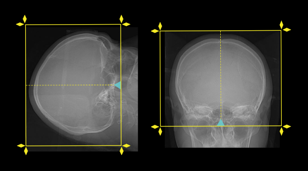
Contrast
Contrast Used: Contrast 350
Saline Push: 30 cc normal saline
Adult Dose: 1 ml/kg with the prssure of 2.2-3ml/sec for age (15-above)
Pediatric Dose: 1.5ml/kg with the pressure of (0.5-2ml/sec)for less than 15 years
Scanning Plan
Scan planned along Glabelomeatal line.
FOV: C2/3 to Vertex
Protocol
- Plain scan: 0.5/1/2mm thickness if option for 5mm is availabe then go for it (accordig to your hospital reqirements
- Post contrast: 60-90 sec delay
- 2 mm brain window
- 0.5 mm bone window
- 3D reconstruction in trauma
- In buccal squamous cell carcinoma, perform POP-Up Protocol(filled air inside the mouth)and ensure proper lesion coverage.
- If there is palpable swelling or draining sinus on the face or neck, place a radio-opaque marker over the area.
- Contrast Used: 350 / 300 volume
- Saline Push: 30 cc normal saline
- Adult Dose: 1 ml/kg body weight(15 years and above)@2.2-3ml/sec
- Pediatric Dose: Below 12 years → 1.5ml/kg body weight@0.5-2.2ml/sec
- Frontal sinus to carina
- Coverage includes bifurcation of trachea (mid chest)
- Scan Direction: Craniocaudal
- Post contrast study at 40–50 seconds
- Plain scan: 0.5/1/2mm thickness if option for 5mm is availabe then go for it (accordig to your hospital reqirements
- Make reconstructions at 2 mm
- 2 mm soft tissue window
- 1 mm coronal soft tissue window images
- Entire neck up to the angle of mandible or maxilla
- Mediastinum down to the carina
- can be performed in both supine and prone depends on the requirement of physician if it is pefromed in prone position then its called FESS protocol Scan coverage should extend from the level of the hard palate up to the superior aspect of the frontal sinuses.
- Mastoid air cells must also be included in the examination.
- Obtain axial images using a 0.5 mm soft tissue acquisition.
-
Reconstruct images in:
- 2 mm soft tissue window
- 0.5 mm high-resolution bone window
-
Recommended bone window settings:
Window Width (WW): 2500
Window Level (WL): 500 - Coverage should start from the hard palate and continue superiorly beyond the frontal sinuses.
- Mastoid air cells should be included in the scan range.
- Perform initial non-contrast acquisition using 0.5 mm soft tissue sections.
-
Reconstruct:
- 2 mm soft tissue images
- 0.5 mm bone window images
-
Bone window settings:
WW: 2500
WL: 500 - Perform post-contrast scanning approximately 45-50 seconds after contrast administration.
- Acquire images at 0.5 mm soft tissue thickness.
- Generate 2 mm reconstructed post-contrast soft tissue images.
- The scan should extend from just above the orbital roof down to the orbital floor.
- Perform non-contrast image acquisition using a 0.5 mm soft tissue protocol.
-
Generate reconstructed images in:
- 2 mm soft tissue window
- 0.5 mm high-resolution bone window
-
Recommended bone window settings:
Window Width (WW): 2500
Window Level (WL): 500 - Scan coverage should include the region from above the orbital roof to the orbital floor.
- Obtain initial non-contrast images using 5 mm soft tissue acquisition.
-
Reconstruct the dataset into:
- 2 mm soft tissue images
- 0.5 mm thin-section bone window images
-
Recommended bone window settings:
WW: 2500
WL: 500 - Perform post-contrast scanning approximately 60 seconds after contrast administration.
- Acquire post-contrast images using 0.5 mm soft tissue sections.
- Prepare 2 mm reconstructed post-contrast soft tissue images.
- The examination should extend from the superior aspect of the temporal bone down to the mastoid tip.
- Perform non-contrast image acquisition using 0.5 mm soft tissue sections.
-
Generate reconstructed images in:
- 2 mm soft tissue window
- 0.5 mm high-resolution bone window
-
Recommended bone window settings:
Window Width (WW): 2500
Window Level (WL): 500 - Scan coverage should include the entire temporal bone region from the summit of the temporal bone to the mastoid tip.
- Obtain initial non-contrast images using 5 mm soft tissue acquisition.
-
Reconstruct the dataset into:
- 2 mm soft tissue images
- 0.5 mm thin-section bone window images
-
Recommended bone window settings:
WW: 2500
WL: 500 - Perform post-contrast scanning approximately 60 seconds after contrast injection.
- Acquire post-contrast images using 0.5 mm soft tissue sections.
- Generate 2 mm reconstructed post-contrast soft tissue images.
- Perform non-contrast image acquisition of cervical , thiracic and lumber spine or whole spine using 0.5mm soft tissue sections depends on the requirement of physician.
-
Generate reconstructed images in:
- 2 mm soft tissue window
- 0.5 mm high-resolution bone window
- Obtain initial non-contrast images using 0.5mm soft tissue acquisition.
-
Reconstruct the dataset into
- 2 mm soft tissue images
- 0.5 mm thin-section bone window images
- Perform post-contrast scanning using fixed delay timings:50-70sec
- Acquire post-contrast images using 0.5mm soft tissue sections.
- Generate 1 mm reconstructed post-contrast soft tissue images.and 0.5 mm bone window all three planes.
- Explain the procedure and breathing instructions before starting the scan.
- Remove all metallic objects from chest region to avoid artifacts.
- Patient should wear hospital gown if required.
- Usually no IV contrast is required for routine HRCT chest.
- Patient should practice breath holding in deep inspiration before acquisition.
- Send thin-section lung window images to PACS.
- Include mediastinal window images when required.
- Coronal and sagittal reformatted images may be added if needed.
- Interstitial lung disease (ILD)
- Pulmonary fibrosis
- Bronchiectasis
- Air trapping
- Chronic lung infection
- Diffuse lung disease evaluation
- 2–3 glasses of water may be given on the CT table just before scanning for stomach distension.
- Do not give oral contrast
- Preferably use an 18G-20G IV cannula in the right median cubital vein for high flow injection.
- If you do not want to use time base Technique you can use bolus tracking Technique
- Time base Technique is useful to reduce chances of extravasation tech can monitor patient in these 30 seconds if he feels slight extravasation he can stop scan on time with Minimum risk to the pt
- Portal Vein: Approximately 80% of liver blood flow.
- Hepatic Artery: Approximately 20% of liver blood flow.
- Arterial phase is important for detecting hypervascular liver lesions.
- Venous phase helps evaluate liver parenchyma and abdominal organs.
- Delayed images may help characterize liver masses and delayed enhancement patterns.
- Give approximately 1000–1500 ml plain water about 45–50 minutes before the scan.
- A full urinary bladder is preferred for better pelvic assessment.
- Proper stomach distension is important to separate stomach tumors from normal collapsed stomach wall
- Arterial phase images help differentiate enhancing gastric tumors from normal stomach wall.
- Additional scans in lateral decubitus for ca stomach near pyloric sphinter or start of dudenum
- Patient should remain fasting for approximately 2–4 hours before the examination.
- Encourage adequate hydration unless medically contraindicated.
- Remove metallic objects from abdominal region before scanning.
- Explain breath-holding instructions clearly before image acquisition.
- Preferably use an 18G or 20G IV cannula in the antecubital vein.
- Non-contrast images are important for measuring adrenal lesion attenuation.
- Delayed phase images help calculate adrenal washout characteristics.
- Biphasic adrenal CT is commonly used for characterization of adrenal adenomas and indeterminate adrenal masses.
- Coronal and sagittal reformatted images may be added if required.
- Patient should remain fasting for approximately 2–4 hours before the scan.
- Approximately 800–1200 ml plain water may be given before examination unless contraindicated.
- A moderately full urinary bladder is preferred for better pelvic visualization.
- Remove metallic objects from chest and abdominal region before scanning.
- Explain breathing instructions clearly before acquisition.
- Preferably use an 18G or 20G IV cannula in the antecubital vein.
- If patient has history of dysphagia or esophageal stricture give oral contrast during the scan so the area of stricture is opasified.oral contrast is given after performing your primary scan and make sure pt is coperative and not have history of asthama .
- Send pre and post contrast axial images to PACS.
- Include lung window and mediastinal window images.
- Coronal and sagittal reformatted images may be added when required.
- Malignancy staging and follow-up
- Metastatic disease evaluation
- Infection assessment
- Trauma evaluation
- Complex abdominal and thoracic pathology
- Give approximately 500–900 ml plain water about 30–45 minutes before the examination.
- A full urinary bladder is preferred for proper urinary tract evaluation.
- Additional 2–3 glasses of water may be given on the CT table just before scanning.
- Positive oral contrast is generally avoided to improve urinary tract visualization.
- Preferably use an 18G or 20G IV cannula in the antecubital vein.
- Send non-contrast, arterial, venous, and delayed phase images to PACS.
- Use 2 mm soft tissue reconstruction.
- Include non-contrast, arterial, venous, and delayed phase images.
- Use 5 mm soft tissue window for filming.
- Hematuria evaluation
- Urinary tract obstruction
- Urothelial tumor assessment
- Renal mass evaluation
- Congenital urinary tract abnormalities
- Patient should be fasting for 3–4 hours before examination.
- Explain the entire procedure including multiple scan phases.
- Remove all metallic objects from neck, chest, and abdomen.
- IV access: Preferably 18G cannula in antecubital vein.
- Check renal function and contrast allergy history before scan.
- Plain water is preferred as oral contrast (800–1000 ml) for abdominal distension.
- Positive oral contrast is avoided in oncology and vascular staging studies.
- Neck: Skull base to thoracic inlet
- Chest: Lung apices to adrenal level
- Abdomen & Pelvis: Diaphragm to symphysis pubis
- Neck: Soft tissue + bone algorithm
- Chest: Lung + mediastinal windows
- Abdomen: Soft tissue window
- Multiplanar reconstructions (axial, coronal, sagittal) mandatory
- This is a single bolus multi-region scan — timing is critical.
- Arterial phase is optional and only for vascular or tumor enhancement indication.
- 0.5 mm thin slices are used for high-resolution multiplanar and 3D evaluation.
- Scan should be performed in cranio-caudal direction to optimize timing.
- Whole body malignancy staging
- Unknown primary tumor
- Metastatic workup
- Multisystem infection or inflammatory disease
- Complex trauma cases involving multiple regions
- Patient should be fasting for 3–4 hours before the scan.
- Explain that this is a multi-region, multi-phase whole-body CT study.
- Remove all metallic objects from head, neck, chest, abdomen, and pelvis.
- IV access: Preferably 18G cannula in antecubital vein for high flow injection.
- Check history of allergy, asthma, and renal function before contrast.
- Plain water (800–1200 ml) may be given before scan for abdominal distension.
- Positive oral contrast is generally avoided in staging / whole-body CT studies.
- Brain: Skull base to vertex
- Neck: Skull base to thoracic inlet
- Chest: Lung apices to costophrenic angles
- Abdomen & Pelvis: Diaphragm to symphysis pubis
- Brain: Brain window + bone window
- Neck: Soft tissue + bone algorithm
- Chest: Lung + mediastinal windows
- Abdomen/Pelvis: Soft tissue window
- Multiplanar reconstructions (axial, coronal, sagittal) are mandatory
- This is a whole-body staging examination performed in a single session.
- Proper timing of venous phase is essential for uniform enhancement.
- 0.5 mm thin slices are required for high-quality MPR and 3D reconstructions.
- Arterial phase is only performed if clinically indicated (tumor or vascular assessment).
- Scanning is usually performed cranio-caudally in a single continuous acquisition strategy.
- Whole-body malignancy staging
- Metastatic disease evaluation
- Unknown primary tumor search
- Multisystem trauma assessment
- Systemic infection or inflammatory disease evaluation
- No specific fasting is required for non-contrast low dose CT.
- Explain the procedure clearly to reduce patient movement and anxiety.
- Remove all metallic objects from head, neck, chest, abdomen, and pelvis.
- No IV cannula is required since no contrast is administered.
- Ensure patient is comfortable to reduce motion artifacts during long scan range.
- Whole body coverage: Skull vertex to mid-thigh or feet (as per request)
- Brain, neck, chest, abdomen, and pelvis included in single acquisition
- Low dose protocol is used to reduce radiation exposure while covering the entire body.
- Image quality is optimized by thin slice (0.5 mm) reconstruction.
- Motion artifacts should be minimized due to long scan range.
- This study is mainly used for screening, trauma overview, or follow-up imaging.
- Whole body trauma screening
- Metastatic survey (follow-up cases)
- General screening in selected oncology patients
- Systemic infection evaluation (selected cases)
- Post-treatment surveillance imaging
- Explain the procedure clearly, including IV contrast injection and venous phase imaging.
- No strict fasting is required; light meal is acceptable.
- Check history of contrast allergy, asthma, and renal function before scan.
- Remove metallic objects from upper limbs, neck, and chest region.
- Preferably use an 18G–20G IV cannula in the contralateral arm (opposite side of suspected pathology).
- From fingertips to thoracic inlet
- Include subclavian vein, axillary vein, brachial vein, cephalic and basilic veins
- Extend to superior vena cava if required
- Axial thin slices (0.5 mm) for primary evaluation
- Multiplanar reconstructions (coronal and sagittal)
- 3D venographic reconstruction (if required)
- Maximum intensity projection (MIP) for venous mapping
- Proper venous timing is essential for optimal opacification of deep veins.
- Arm positioning should be adjusted to avoid compression of venous drainage.
- Both superficial and deep venous systems should be evaluated.
- Compare both sides when bilateral disease is suspected.
- Suspected upper limb deep vein thrombosis (DVT)
- Venous obstruction or stenosis
- Pre-operative venous mapping
- Central venous catheter-related complications
- Thoracic outlet syndrome evaluation
- Explain the procedure including IV contrast injection and delayed venous imaging.
- No strict fasting is required.
- Check history of contrast allergy, asthma, and renal function before scanning.
- Remove metallic objects from lower limbs, pelvis, and abdomen region.
- Preferably use an 18G–20G IV cannula in an upper limb vein for better contrast delivery.
- From iliac vessels to toes (as per clinical request)
- Include iliac veins, femoral veins, popliteal veins, and calf veins
- Axial thin slices (0.5 mm) for detailed venous assessment
- Coronal and sagittal reformats
- MIP (Maximum Intensity Projection) for venous mapping
- 3D venography reconstruction if required
- Proper timing is essential for optimal venous opacification.
- Lower limb positioning should avoid external compression of veins.
- Compare both limbs in suspected unilateral disease.
- Evaluate iliac veins carefully for proximal obstruction.
- Suspected lower limb deep vein thrombosis (DVT)
- Venous insufficiency or obstruction
- Pre-surgical venous mapping
- Post-traumatic venous injury
- Suspected pelvic venous compression syndromes
- Explain the procedure clearly including contrast injection and arterial phase imaging.
- No strict fasting is required, but 2–4 hours fasting is preferred.
- Check history of contrast allergy, asthma, and renal function before scanning.
- Remove metallic objects from head, neck, and upper chest region.
- Use 18G IV cannula in antecubital vein for high flow injection.
- From aortic arch (if included) or carotid bifurcation up to vertex
- Circle of Willis and intracranial arterial system
- Axial thin slices (0.5 mm) for primary evaluation
- Multiplanar reconstruction (MPR) in coronal and sagittal planes
- Maximum Intensity Projection (MIP) for vessel mapping
- 3D volume rendering for aneurysm and vascular malformation evaluation
- Proper timing is critical for optimal arterial opacification.
- Patient motion must be minimized for accurate vascular reconstruction.
- Evaluate Circle of Willis, MCA, ACA, and PCA branches carefully.
- CTA may be combined with venous phase if venous sinus evaluation is required.
- Suspected intracranial aneurysm
- Stroke evaluation (large vessel occlusion)
- Arteriovenous malformations (AVM)
- Pre-operative vascular mapping
- Subarachnoid hemorrhage workup
- Explain the procedure including contrast injection and arterial phase imaging.
- No strict fasting is required; 2–4 hours fasting is preferred if possible.
- Check history of contrast allergy, asthma, and renal function before scanning.
- Remove metallic objects from neck, jaw, and upper chest region (dentures if removable).
- Use 18G IV cannula in antecubital vein for optimal arterial enhancement.
- From aortic arch (or carotid origin) to skull base
- Include common carotid, internal carotid, and external carotid arteries
- Evaluate vertebral arteries up to intracranial entry if needed
- Axial thin slices (0.5 mm) for primary evaluation
- Multiplanar reconstruction (coronal and sagittal)
- Maximum Intensity Projection (MIP) for vessel mapping
- 3D volume rendering for stenosis and plaque assessment
- Correct timing is essential for optimal carotid arterial opacification.
- Patient should avoid swallowing during scan to reduce motion artifacts.
- Evaluate carotid bifurcation carefully for stenosis or plaque.
- Include vertebral artery assessment when clinically indicated.
- Carotid artery stenosis
- Stroke or TIA evaluation
- Pre-surgical carotid mapping
- Suspected dissection
- Atherosclerotic disease assessment
- Explain the procedure clearly including contrast injection and arterial imaging.
- No strict fasting is required, but 2–4 hours fasting is preferred if possible.
- Check history of contrast allergy, asthma, and renal function before scanning.
- Remove all metallic objects from upper limbs, chest, and neck region.
- Use 18G IV cannula in the contralateral antecubital vein for high flow injection.
- From aortic arch (if included) or subclavian artery origin
- Axillary artery
- Brachial artery
- Radial and ulnar arteries up to hand
- Axial thin slices (0.5 mm) for primary evaluation
- Multiplanar reconstruction (coronal & sagittal)
- Maximum Intensity Projection (MIP) for vessel mapping
- 3D volume rendering for arterial anatomy
- Proper timing is essential for optimal arterial enhancement.
- Patient should avoid movement and swallowing during scan.
- Both superficial and deep arterial systems should be evaluated.
- Compare both limbs if unilateral disease is suspected.
- Peripheral arterial disease (upper limb)
- Traumatic arterial injury
- Suspected arterial+-- stenosis or occlusion
- Pre-surgical vascular mapping
- Thoracic outlet syndrome
- Explain the procedure clearly including rapid IV contrast injection and breath-hold instructions.
- No strict fasting is required, but 2–4 hours fasting is preferred.
- Check history of contrast allergy, asthma, and renal function before scanning.
- Remove metallic objects from chest and neck region.
- Use an 18G IV cannula in the right antecubital vein whenever possible.
- Avoid lower limb cannulation in suspected pulmonary embolism cases.
- From lung apices to below costophrenic angles
- Include entire pulmonary arterial system
- Axial thin slices (0.5 mm)
- Coronal and sagittal reformats
- MIP images for pulmonary vessel evaluation
- 3D reconstruction if required
- Lung window and mediastinal window images
- Patient should hold breath after gentle inspiration.
- Avoid deep inspiration to reduce mixing artifact in pulmonary arteries.
- Accurate timing is essential for proper pulmonary artery opacification.
- Motion artifacts should be minimized during acquisition.
- Evaluate main, lobar, segmental, and subsegmental pulmonary arteries carefully.
- Assess lung parenchyma, pleura, and mediastinum on additional windows.
- Suspected pulmonary embolism (PE)
- Pulmonary hypertension evaluation
- Pulmonary vascular abnormalities
- Thoracic vascular trauma
- Pre-operative pulmonary vascular assessment
- Explain the procedure clearly including IV contrast injection and arterial phase imaging.
- Advise fasting for 4–6 hours if possible.
- Check renal function, contrast allergy history, and blood pressure status before scanning.
- Remove metallic objects from abdomen and pelvic region.
- Use an 18G IV cannula in the antecubital vein for high flow contrast injection.
- Hydration before and after scan is recommended unless contraindicated.
- From diaphragm to iliac crest
- Include abdominal aorta, renal arteries, kidneys, and proximal iliac vessels
- Axial thin slices (0.5 mm)
- Coronal and sagittal reformats
- MIP images for vascular mapping
- 3D volume rendering of renal arteries
- Evaluation of accessory renal arteries if present
- Proper arterial timing is critical for optimal visualization of renal arteries.
- Thin slice acquisition improves evaluation of stenosis and accessory arteries.
- Breath-hold instructions should be explained clearly to reduce motion artifacts.
- Assess kidneys, renal arteries, abdominal aorta, and surrounding vessels carefully.
- Renal artery stenosis
- Hypertension evaluation
- Renal artery aneurysm
- Pre-operative renal donor assessment
- Post renal transplant vascular evaluation
- Traumatic renal vascular injury
- Explain the procedure clearly including rapid IV contrast injection and arterial phase imaging.
- Fasting for 4–6 hours is preferred if patient condition allows.
- Check history of contrast allergy, asthma, renal disease, and previous vascular surgery.
- Remove metallic objects from abdomen and pelvic region.
- Use an 18G IV cannula in the antecubital vein for high flow injection.
- Positive oral contrast should generally be avoided because it may interfere with vascular assessment.
- From diaphragm to symphysis pubis
- Include abdominal aorta, celiac trunk, SMA, IMA, mesenteric vessels, and bowel loops
- Axial thin slices (0.5 mm)
- Coronal and sagittal reformats
- MIP images for vessel evaluation
- 3D volume rendering of mesenteric arteries
- Evaluate bowel wall enhancement and mesenteric fat changes
- Accurate arterial timing is essential for optimal mesenteric vessel visualization.
- Thin slice acquisition improves detection of stenosis, occlusion, or aneurysm.
- Breath-hold instructions should be explained clearly before scanning.
- Evaluate celiac trunk, superior mesenteric artery (SMA), inferior mesenteric artery (IMA), and venous structures
Note:Minimum slice thickness gives more details but increase radiation dose to the patient the option for slice thickness is availabe at Protocol section (0.5x64,1x32and 2x16) however you can make their reconstructions at reconstruction section accordig to your reqirements
CT Neck Soft Tissues Protocol
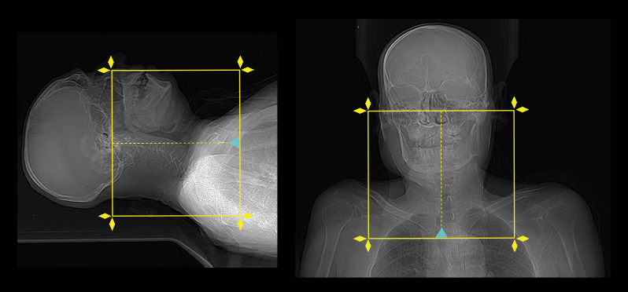
Contrast
Field of View (FOV)
Protocol
Filming
4D CT Neck for Parathyroid Adenoma
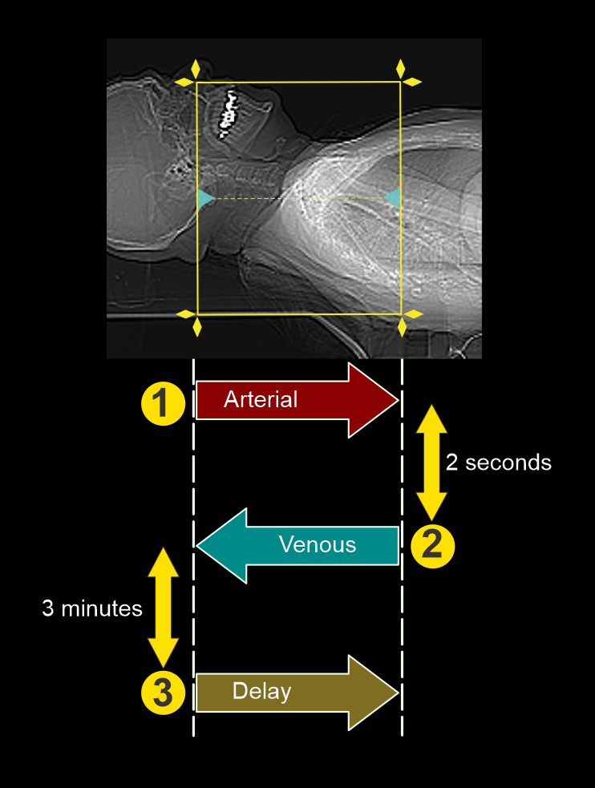
A typical 4D CT neck protocol consists of three scanning phases:
25–30 Seconds After Contrast Injection
50-55 Seconds After Contrast Injection
120-150 Seconds After Contrast Injection for staging of tumor if requested
Coverage
CT PNS Without Contrast
Scan Coverage
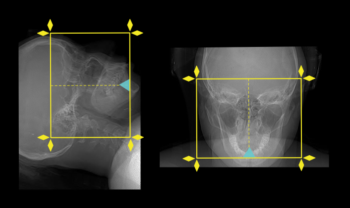

Scanning Technique
CT PNS With Contrast
Scan Coverage
Pre-Contrast Imaging
Post-Contrast Imaging
CT Orbit Without Contrast
Scan Coverage
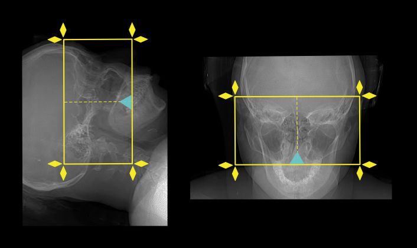
Scanning Protocol
CT Orbit With Contrast
Scan Coverage
Pre-Contrast Imaging
Post-Contrast Imaging
CT Ear / Petrous Bone Without Contrast
Scan Coverage
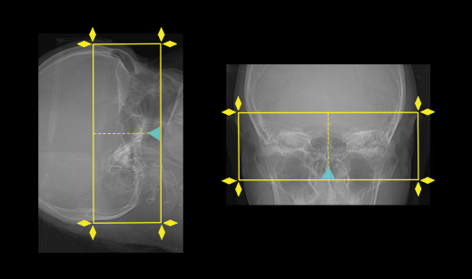
Scanning Protocol
CT Ear / Petrous Bone With Contrast
Scan Coverage
Pre-Contrast Imaging
Post-Contrast Imaging
Spine Without Contrast
Scanning Protocol
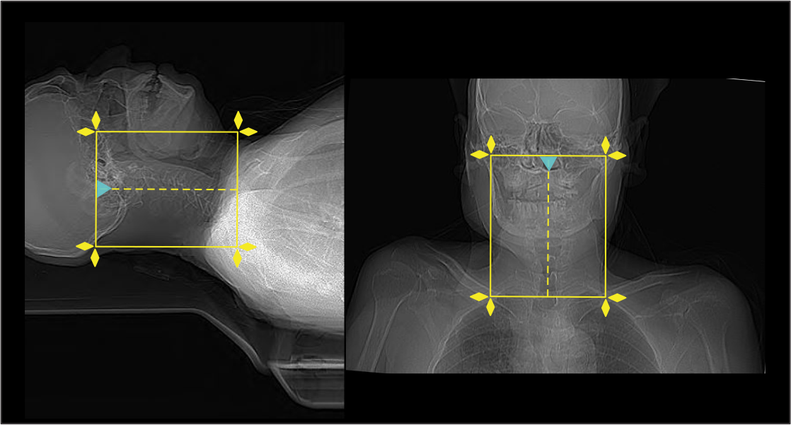


CT Spine With Contrast
Pre-Contrast Imaging
Post-Contrast Imaging
HRCT Chest Protocol
Patient Preparation
Scan Coverage
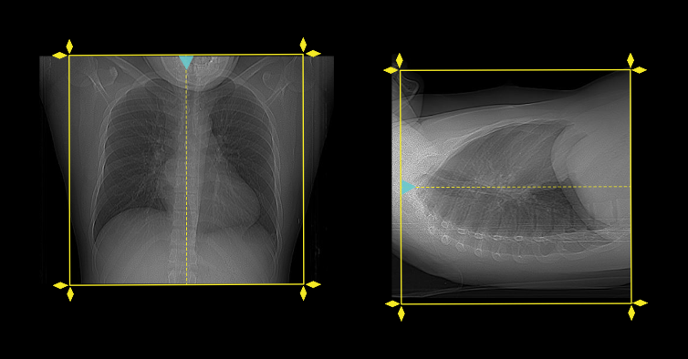
| Region | Coverage |
|---|---|
| Chest | Lung apices to costophrenic angles |
Acquisition Protocol
| Parameter | Protocol |
|---|---|
| Slice Thickness | 1 mm or thinner |
| Reconstruction | High-resolution lung algorithm |
| Scan Mode | Helical acquisition |
| Breathing Phase | Deep inspiration breath hold |
| Additional Expiratory Scan | Performed if air trapping is suspected |
| Prone Images | Optional if dependent opacity needs evaluation |
Reconstruction & Windows
| Window | Settings |
|---|---|
| Lung Window | WW 1500 / WL -600 |
| Mediastinal Window | WW 350 / WL 40 |
PACS / Film
Clinical Indications
Triphasic CT Liver Protocol
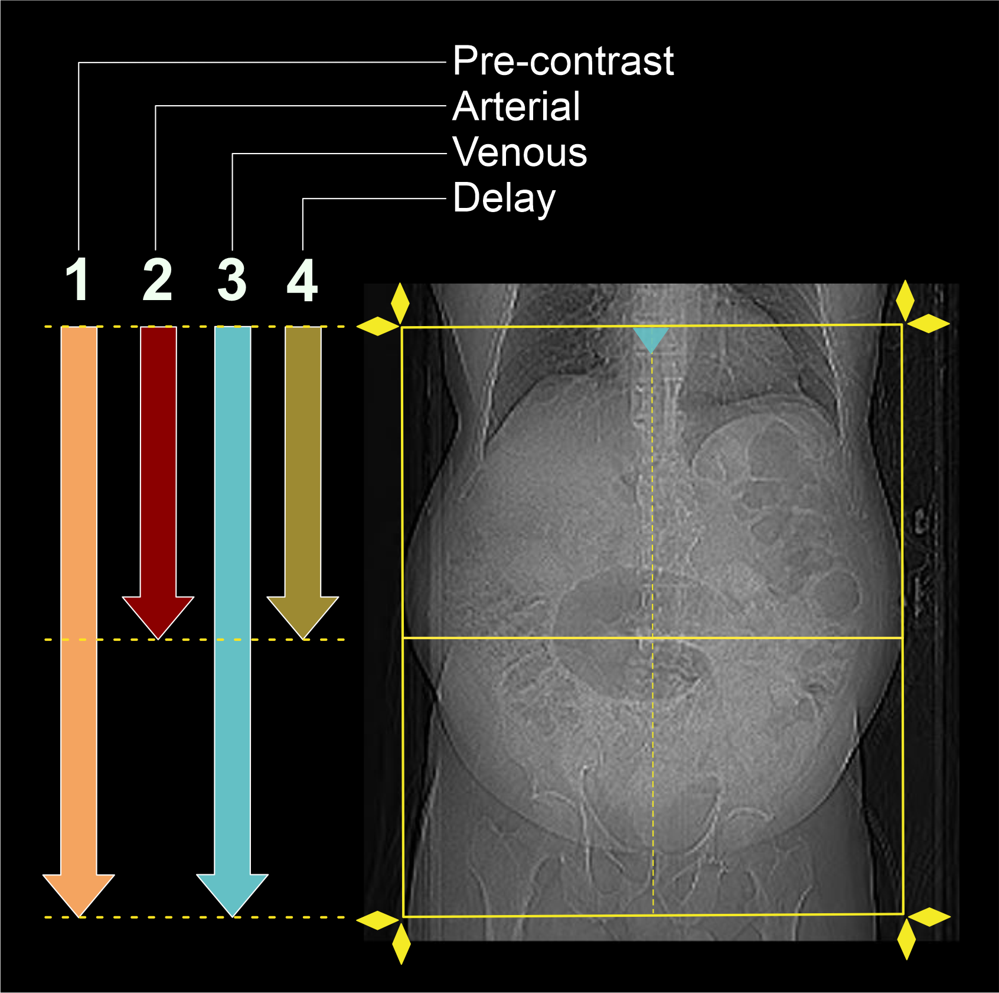

Patient Preparation
Contrast Protocol
| Category | Protocol |
|---|---|
| Contrast Used | Contrast 350 ml |
| Adults | 1 ml/kg at 4–5 ml/sec |
| Pediatric (Below 12 years) | 1.3ml/kg |
| Saline Push | 30 cc normal saline |
Scanning Phases
| Phase | Coverage | Timing | Slice Thickness | Reconstruction |
|---|---|---|---|---|
| Non-Contrast Phase | Base of lungs to lower pole of kidneys | Before contrast | 0.5mm | 2 mm |
| Arterial Phase | Base of lungs to lower pole of kidneys | 30 seconds | 0.5 mm | 2 mm |
| Venous Phase | Base of lungs to lower pelvis | 60-90 seconds | 0.5mm | 2 mm |
| Delayed Phase | Base of lungs to lower pole of kidneys | 180-300 seconds | 0.5mm | 2 mm |
Bolus Tracking Settings
| Parameter | Value |
|---|---|
| Threshold | 150 HU |
| ROI Location | Descending aorta at liver level |
| Monitoring Delay | 5 seconds |
| Diagnostic Delay | 15 seconds |
Contrast Enhancement Phases in CT
Contrast-enhanced CT (CECT) improves the visibility of disease by increasing the difference between abnormal tissue and surrounding normal structures. Different pathologies become more visible during specific enhancement phases, making correct scan timing extremely important.
| Phase | Timing | Main Features |
|---|---|---|
| Non-Enhanced CT (NECT) | Before Contrast | Detects calcification, fat-containing lesions, hemorrhage, stones, and inflammatory fat stranding. |
| Early Arterial Phase | 15–20 sec | Contrast is mainly within arteries. Organs have minimal enhancement. Useful for vascular assessment. |
| Late Arterial Phase | 35–40 sec | Maximum enhancement of arteries and hypervascular lesions. Portal vein begins to enhance. |
| Hepatic (Portal Venous) Phase | 70–80 sec | Optimal enhancement of liver parenchyma through portal venous blood supply. Best phase for most abdominal pathology. |
| Nephrographic Phase | 100 sec | Uniform enhancement of renal cortex and medulla. Ideal for detecting small renal masses. |
| Delayed Phase | 6–10 min | Most tissues wash out contrast. Fibrotic lesions retain contrast and become more conspicuous. |
Liver Blood Supply and Lesion Enhancement
The liver has a dual blood supply:
Normal liver tissue enhances most strongly during the portal venous (hepatic) phase because it receives the majority of its blood from the portal vein.
Enhancement Pattern of Liver Lesions
| Lesion Type | Best Phase | Examples |
|---|---|---|
| Hypervascular Lesions | Late Arterial Phase (35–40 sec) | HCC, FNH, Hepatic Adenoma, Hemangioma |
| Hypovascular Lesions | Portal Venous Phase (70–80 sec) | Metastases, Abscesses, Cysts |
| Fibrotic Lesions | Delayed Phase (6–10 min) | Cholangiocarcinoma, Fibrotic Metastases |
Quick Clinical Guide
| Clinical Question | Best CT Phase |
|---|---|
| Arterial Anatomy | Early / Late Arterial |
| Hypervascular Liver Tumor | Late Arterial |
| Liver Metastasis | Portal Venous |
| Renal Cell Carcinoma | Nephrographic |
| Fibrotic Tumors | Delayed |
| Abdominal Inflammation | Portal Venous |

CT Abdomen and Pelvis (Stomach Cancer Protocol)

Patient Preparation
Contrast Protocol
| Category | Protocol |
|---|---|
| Contrast Used | Contrast 350 ml |
| Saline Push | 30 cc normal saline |
| Adults (14 years and above) | 1 ml/kg at 4 ml/sec |
| Pediatric (Below 14 years) | 1.3 ml/kg at 1–2.5 ml/sec |
Scanning Phases
| Phase | Coverage | Timing | Slice Thickness | Reconstruction |
|---|---|---|---|---|
| Plain Scan | Base of lungs to lower pelvis | Before contrast | 0.5mm | 2 mm |
| Arterial Phase | Base of lungs to iliac crest | 30 seconds | 0.5mm | 2 mm |
| Venous Phase | Base of lungs to lower pelvis | 60-90 seconds | 0.5mm | 2 mm |
| Delayed Phase | As required | 180-300 seconds | 0.5mm | 2 mm |
Additional Notes
CT Biphasic Adrenal Protocol
Patient Preparation
Contrast Protocol
| Category | Protocol |
|---|---|
| Contrast Used | Contrast 350 ml |
| Adults | 1–1.5 ml/kg at 3–4 ml/sec |
| Pediatric | 1.5–2 ml/kg as required |
| Saline Push | 30 cc normal saline |
Scanning Phases
| Phase | Coverage | Timing | Slice Thickness | Reconstruction |
|---|---|---|---|---|
| Non-Contrast Phase | Upper abdomen including adrenal glands | Before contrast | 0.5 mm | 2 mm |
| Venous Phase | Upper abdomen including adrenal glands | 60–70 seconds | 0.5 mm | 2 mm |
| Delayed Phase | Focused adrenal region | 10–15 minutes | 0.5 mm | 2 mm |
Additional Notes
CT Chest, Abdomen and Pelvis With & Without Contrast

Patient Preparation
Contrast Protocol
| Category | Protocol |
|---|---|
| Contrast Used | Contrast 350 ml |
| Adults | 1 ml/kg at 3–4 ml/sec |
| Pediatric | 1.3 ml/kg at 1–2 ml/sec |
| Saline Push | 30 cc normal saline |
Scan Coverage
| Region | Coverage |
|---|---|
| chest Abdomen & Pelvis | lungs apices to symphysis pubis |
Scanning Phases
| Phase | Timing | Slice Thickness | Reconstruction |
|---|---|---|---|
| Plain Phase | Before contrast | 0.5mm | 2 mm |
| Post Contrast Venous Phase | 70–80 seconds | 0.5 mm | 2 mm |
Reconstruction & Windows
| Window | Settings |
|---|---|
| Lung Window | WW 1500 / WL -600 |
| Mediastinal Window | WW 350 / WL 40 |
| Soft Tissue Window | WW 400 / WL 40 |
PACS / Film
Clinical Indications
CT Urogram Protocol


Patient Preparation
Contrast Protocol
| Category | Protocol |
|---|---|
| Contrast Used | Contrast 350 ml |
| Adults | 1 ml/kg |
| Pediatric (Below 12 years) | 2 ml/kg |
| Saline Push | 30 cc normal saline |
Scanning Phases
| Phase | Coverage | Timing | Slice Thickness | Reconstruction |
|---|---|---|---|---|
| Non-Contrast KUB | Kidneys, ureters and bladder | Before contrast | 10 mm | 2 mm |
| Corticomedullary (Arterial) Phase | Base of lungs to lower pole of kidneys | 15–20 sec after trigger | 10 mm | 2 mm |
| Nephrographic (Venous) Phase | Base of lungs to lower pelvis | 100 seconds | 10 mm | 2 mm |
| Excretory (Delayed) Phase | Kidneys, ureters and bladder | 7–10 minutes | 10 mm | 2 mm |
Bolus Tracking Settings
| Parameter | Value |
|---|---|
| Threshold | 150 HU |
| ROI Location | Descending aorta at liver level |
| Monitoring Delay | 8 seconds |
| Post Trigger Delay | 15–20 seconds |
PACS Protocol
Film Protocol
Clinical Indications
CT Neck, Chest, Abdomen and Pelvis (With & Without Contrast) – Single Session Protocol
Patient Preparation
Oral Preparation
IV Contrast Protocol
| Parameter | Details |
|---|---|
| Contrast | Non-ionic iodinated contrast (Contrast 350) |
| Dose (Adults) | 1 ml/kg |
| Injection Rate | 3–4 ml/sec |
| Saline Flush | 30–40 ml normal saline |
Scan Coverage (Continuous Acquisition – Single Session)
CT Acquisition Protocol
| Phase | Region | Timing | Slice Thickness | Reconstruction |
|---|---|---|---|---|
| Non-Contrast Phase | Neck + Chest + Abdomen + Pelvis | Before contrast | 0.5 mm | 0.5 mm |
| Arterial Phase (if indicated) | Neck + Chest + Upper Abdomen | 25–35 sec | 0.5 mm | 0.5 mm |
| Venous Phase (Standard) | Neck + Chest + Abdomen + Pelvis | 70–80 sec | 0.5 mm | 0.5 mm |
| Delayed Phase (if required) | Abdomen/Pelvis targeted | 3–10 min | 0.5 mm | 0.5 mm |
Reconstruction Protocol
Important Technical Notes
Indications
CT Brain, Neck, Chest, Abdomen and Pelvis With & Without Contrast (Whole Body Study)
Patient Preparation
Oral / Fluid Preparation
IV Contrast Protocol
| Parameter | Protocol |
|---|---|
| Contrast | Non-ionic iodinated contrast (Contrast 350) |
| Adult Dose | 1 ml/kg body weight |
| Injection Rate | 3–4 ml/sec |
| Saline Flush | 30–40 ml normal saline |
Scan Coverage (Whole Body Single Session)
CT Acquisition Protocol
| Phase | Coverage | Timing | Slice Thickness | Reconstruction |
|---|---|---|---|---|
| Non-Contrast Phase | Brain + Neck + Chest + Abdomen + Pelvis | Before contrast | 0.5 mm | 0.5 mm |
| Arterial Phase (Optional) | Neck + Chest + Upper Abdomen | 25–35 sec | 0.5 mm | 0.5 mm |
| Venous Phase (Standard) | Brain to Pelvis | 70–80 sec | 0.5 mm | 0.5 mm |
| Delayed Phase (If required) | Targeted abdomen/pelvis | 3–10 min | 0.5 mm | 0.5 mm |
Reconstruction Protocol
Technical Notes
Clinical Indications
CT Whole Body Low Dose (Without Contrast)

Patient Preparation
Scan Coverage
Scanning Protocol
| Parameter | Protocol |
|---|---|
| Contrast | Not required |
| Technique | Low dose helical acquisition |
| Slice Thickness | 0.5 mm acquisition with reconstruction |
| Reconstruction | 0.5 mm soft tissue + bone algorithm |
Region-Based Reconstructions
| Region | Window Settings |
|---|---|
| Brain | Brain window + bone window |
| Neck | Soft tissue window |
| Chest | Lung window + mediastinal window |
| Abdomen & Pelvis | Soft tissue window |
Technical Notes
Clinical Indications
CT Upper Limb Venography

Patient Preparation
Contrast Protocol
| Parameter | Protocol |
|---|---|
| Contrast | Non-ionic iodinated contrast (Contrast 350) |
| Adult Dose | 1 ml/kg body weight |
| Injection Rate | 2.5–3.5 ml/sec (depending on vein quality) |
| Saline Flush | 30 ml normal saline |
Scan Coverage
Scanning Protocol
| Phase | Timing | Slice Thickness | Reconstruction |
|---|---|---|---|
| Venous Phase (Primary) | 60–90 seconds after injection | 0.5 mm | 0.5 mm |
| Delayed Phase (if required) | 2–5 minutes | 0.5 mm | 0.5 mm |
Reconstruction & Visualization
Technical Notes
Clinical Indications
CT Lower Limb Venography

Patient Preparation
Contrast Protocol
| Parameter | Protocol |
|---|---|
| Contrast | Non-ionic iodinated contrast (Contrast 350) |
| Adult Dose | 1 ml/kg body weight |
| Injection Rate | 3–4 ml/sec |
| Saline Flush | 30–40 ml normal saline |
Scan Coverage
Scanning Protocol
| Phase | Timing | Slice Thickness | Reconstruction |
|---|---|---|---|
| Venous Phase (Primary) | 60–90 seconds after injection | 0.5 mm | 0.5 mm |
| Delayed Phase (Optional) | 2–5 minutes (if required) | 0.5 mm | 0.5 mm |
Reconstruction & Visualization
Technical Notes
Clinical Indications
CT Angiography Brain (Cerebral CTA)


Patient Preparation
Contrast Protocol
| Parameter | Protocol |
|---|---|
| Contrast | Non-ionic iodinated contrast (Contrast 350) |
| Adult Dose | 1 ml/kg body weight |
| Injection Rate | 4–5 ml/sec (high flow required) |
| Saline Flush | 30–40 ml normal saline |
Scan Coverage
Scanning Protocol
| Phase | Timing | Slice Thickness | Reconstruction |
|---|---|---|---|
| Arterial Phase (Primary CTA) | Bolus tracking or 15–25 sec delay | 0.5 mm | 0.5 mm |
| Delayed Phase (if required) | 45–60 sec | 0.5 mm | 0.5 mm |
Bolus Tracking
| Parameter | Value |
|---|---|
| ROI Placement | aortic arch/visual if roi placed in air/15 sec if cannula is inserted into cubital vain /26 -28 seconds if cannula is inserted to lower limb |
| Threshold | 120–150 HU |
| Trigger Delay | 0 seconds |
Reconstruction Protocol
Technical Notes
Clinical Indications
CT Angiography Carotid (Carotid CTA)
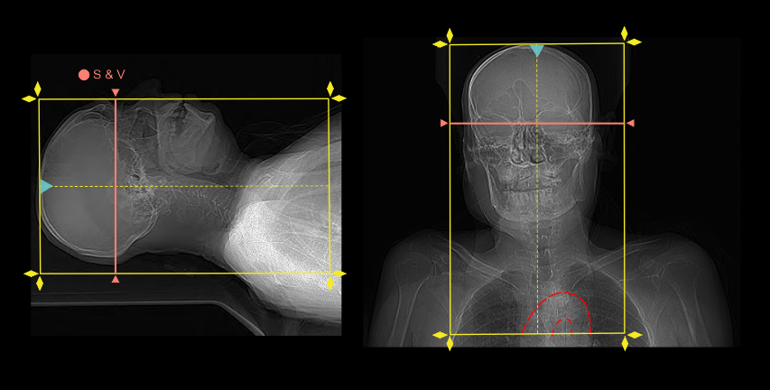

Patient Preparation
Contrast Protocol
| Parameter | Protocol |
|---|---|
| Contrast | Non-ionic iodinated contrast (Contrast 350) |
| Adult Dose | 1 ml/kg body weight |
| Injection Rate | 4–5 ml/sec (high flow required) |
| Saline Flush | 30–40 ml normal saline |
Scan Coverage
Scanning Protocol
| Phase | Timing | Slice Thickness | Reconstruction |
|---|---|---|---|
| Arterial Phase (CTA) | Bolus tracking or 15–25 sec delay | 0.5 mm | 0.5 mm |
| Delayed Phase (if required) | 45–60 sec | 0.5 mm | 0.5 mm |
Bolus Tracking
| Parameter | Value |
|---|---|
| ROI Placement | Aortic arch or common carotid artery |
| Threshold | 120–150 HU |
| Trigger Delay | 0 seconds |
Reconstruction Protocol
Technical Notes
Clinical Indications
CT Angiography Upper Limb
Patient Preparation
Contrast Protocol
| Parameter | Protocol |
|---|---|
| Contrast | Non-ionic iodinated contrast (Contrast 350) |
| Dose | 1 ml/kg body weight |
| Injection Rate | 4–5 ml/sec (high flow required) |
| Saline Flush | 30–40 ml normal saline |
Scan Coverage
Scanning Protocol
| Phase | Timing | Slice Thickness | Reconstruction |
|---|---|---|---|
| Arterial Phase (CTA) | Bolus tracking / 15–25 sec delay | 0.5 mm | 0.5 mm |
| Delayed Phase (if required) | 45–60 sec | 0.5 mm | 0.5 mm |
Bolus Tracking
| Parameter | Value |
|---|---|
| ROI Placement | Aortic arch or subclavian artery |
| Threshold | 120–150 HU |
| Trigger Delay | 0 seconds |
Reconstruction Protocol
Technical Notes
Clinical Indications
CT Pulmonary Angiography (CTPA)
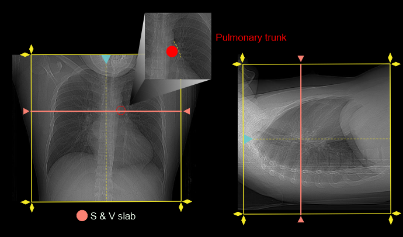

Patient Preparation
Contrast Protocol
| Parameter | Protocol |
|---|---|
| Contrast | Non-ionic iodinated contrast (Contrast 350) |
| Adult Dose | 1 ml/kg body weight |
| Pediatric Dose | 1.3 ml/kg body weight |
| Injection Rate | 4–5 ml/sec |
| Saline Flush | 30–40 ml normal saline |
Scan Coverage
Scanning Protocol
| Phase | Timing | Slice Thickness | Reconstruction |
|---|---|---|---|
| Pulmonary Arterial Phase | Bolus tracking / automatic triggering/12 seconds | 0.5 mm | 0.5 mm |
| Delayed Phase (if required) | Optional | 0.5 mm | 0.5 mm |
Bolus Tracking
| Parameter | Value |
|---|---|
| ROI Placement | Main pulmonary trunk |
| Threshold | 60-80 HU |
| Monitoring Delay | 0 seconds |
| Post Trigger Delay | 0seconds |
Reconstruction Protocol
Breathing Instructions
Technical Notes
Clinical Indications
CT Renal Angiography

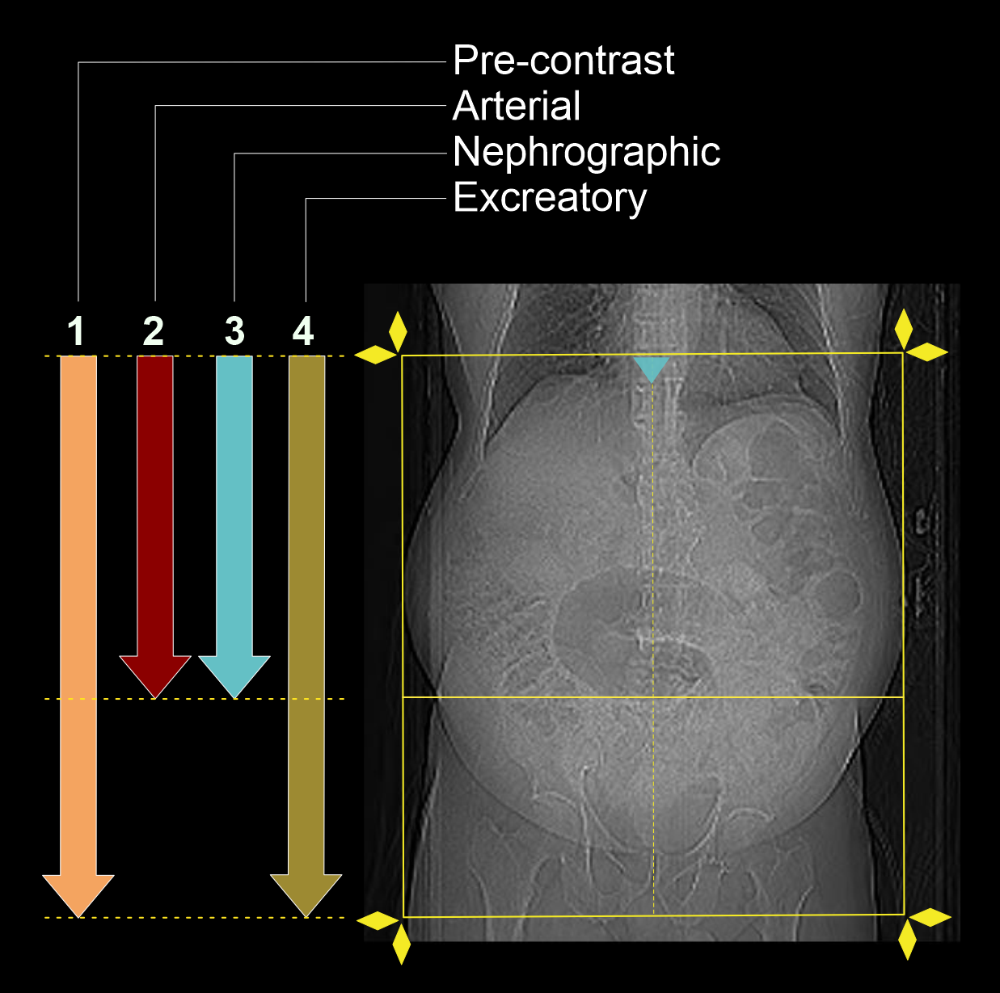
Patient Preparation
Contrast Protocol
| Parameter | Protocol |
|---|---|
| Contrast | Non-ionic iodinated contrast (Contrast 350) |
| Adult Dose | 1–1.2 ml/kg body weight |
| Pediatric Dose | 1.3 ml/kg body weight |
| Injection Rate | 4–5 ml/sec |
| Saline Flush | 30–40 ml normal saline |
Scan Coverage
Scanning Protocol
| Phase | Timing | Slice Thickness | Reconstruction |
|---|---|---|---|
| Non-Contrast Phase | Before contrast | 0.5 mm | 0.5 mm |
| Arterial Phase (CTA) | 20–25 sec | 0.5 mm | 0.5 mm |
| Venous Phase | 60–70 sec | 0.5 mm | 0.5 mm |
| Delayed Phase (if required) | 3–5 minutes | 0.5 mm | 0.5 mm |
Bolus Tracking
| Parameter | Value |
|---|---|
| ROI Placement | Abdominal aorta above renal arteries |
| Threshold | 120–150 HU |
| Monitoring Delay | 5 seconds |
| Post Trigger Delay | 0 seconds |
Reconstruction Protocol
Technical Notes
Clinical Indications
CT Mesenteric Angiography
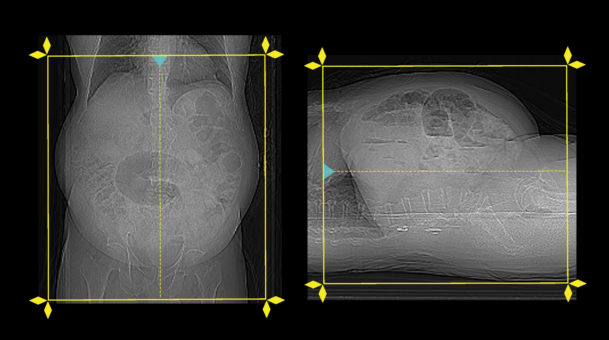
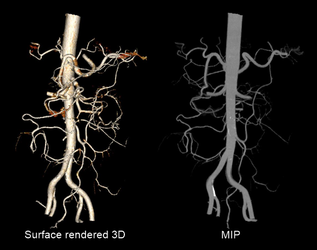
Patient Preparation
Contrast Protocol
| Parameter | Protocol |
|---|---|
| Contrast | Non-ionic iodinated contrast (Contrast 350) |
| Adult Dose | 1–1.2 ml/kg body weight |
| Pediatric Dose | 1.3 ml/kg body weight |
| Injection Rate | 4–5 ml/sec |
| Saline Flush | 30–40 ml normal saline |
Scan Coverage
Scanning Protocol
| Phase | Timing | Slice Thickness | Reconstruction |
|---|---|---|---|
| Non-Contrast Phase | Before contrast | 0.5 mm | 0.5 mm |
| Arterial Phase (Primary CTA) | 20-25 sec | 0.5 mm | 0.5 mm |
| Venous Phase | 60–70 sec | 0.5 mm | 0.5 mm |
| Delayed Phase (if required) | 3–5 min | 0.5 mm | 0.5 mm |
Bolus Tracking
| Parameter | Value |
|---|---|
| ROI Placement | Abdominal aorta above celiac axis |
| Threshold | 120–150 HU |
| Monitoring Delay | 0 seconds |
| Post Trigger Delay | 0 seconds |
Reconstruction Protocol
Technical Notes
CT Angiography Lower Limb

Patient Preparation
- Explain the procedure clearly including rapid IV contrast injection and arterial phase imaging.
- Advise fasting for 4–6 hours if possible.
- Check renal function and history of contrast allergy before the scan.
- Remove metallic objects from lower limbs, pelvis, and abdomen region.
- Use an 18G IV cannula in the antecubital vein for high flow contrast injection.
- Position both legs straight and avoid movement during scanning.
Contrast Protocol
| Parameter | Protocol |
|---|---|
| Contrast | Non-ionic iodinated contrast (Contrast 350) |
| Adult Dose | 1–1.2 ml/kg body weight |
| Pediatric Dose | 1.3 ml/kg body weight |
| Injection Rate | 4–5 ml/sec |
| Saline Flush | 30–40 ml normal saline |
Scan Coverage
- From abdominal aorta or iliac arteries down to feet
- Include iliac, femoral, popliteal, tibial, and pedal arteries
Scanning Protocol
| Phase | Timing | Slice Thickness | Reconstruction |
|---|---|---|---|
| Non-Contrast Phase (if required) | Before contrast | 0.5 mm | 0.5 mm |
| Arterial Phase (Primary CTA) | Bolus tracking / automatic triggering | 0.5 mm | 0.5 mm |
| Delayed Phase (if required) | Optional | 0.5 mm | 0.5 mm |
Bolus Tracking
| Parameter | Value |
|---|---|
| ROI Placement | Abdominal aorta above iliac bifurcation |
| Threshold | 120–150 HU |
| Monitoring Delay | 5 seconds |
| Post Trigger Delay | 0 seconds |
Reconstruction Protocol
- Axial thin slices (0.5 mm)
- Coronal and sagittal reformats
- MIP images for arterial mapping
- 3D volume rendering for vascular anatomy
- Bone subtraction techniques may be used if required
Technical Notes
- Proper arterial timing is essential for optimal lower limb arterial enhancement.
- Motion artifacts should be minimized during long scan acquisition.
- Evaluate arterial narrowing, occlusion, aneurysm, and collateral vessels carefully.
- Compare both lower limbs for asymmetrical disease.
Clinical Indications
- Peripheral arterial disease (PAD)
- Lower limb ischemia
- Traumatic vascular injury
- Arterial stenosis or occlusion
- Pre-operative vascular mapping
- Aneurysm evaluation
CT Aortogram
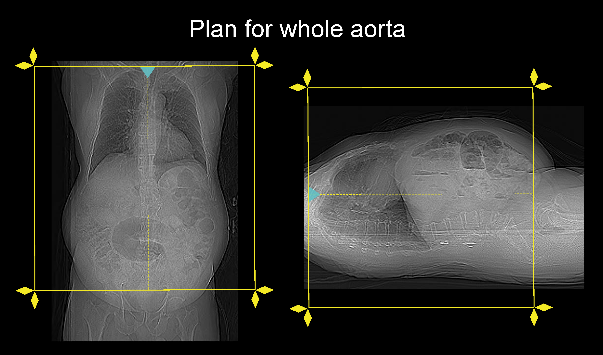

Patient Preparation
- Explain the procedure clearly including rapid IV contrast injection and breath-hold instructions.
- Advise fasting for 4–6 hours if possible.
- Check renal function and history of contrast allergy before the scan.
- Remove metallic objects from chest, abdomen, and pelvic region.
- Use an 18G IV cannula in the antecubital vein for high flow injection.
- Ensure patient remains still during scan acquisition.
Contrast Protocol
| Parameter | Protocol |
|---|---|
| Contrast | Non-ionic iodinated contrast (Contrast 350) |
| Adult Dose | 1–1.2 ml/kg body weight |
| Pediatric Dose | 1.3 ml/kg body weight |
| Injection Rate | 4–5 ml/sec |
| Saline Flush | 30–40 ml normal saline |
Scan Coverage
- Coverage depends on clinical indication.
- May include thoracic aorta, abdominal aorta, iliac arteries, or complete aorta.
- Standard whole aorta study extends from thoracic inlet to femoral arteries.
Scanning Protocol
| Phase | Timing | Slice Thickness | Reconstruction |
|---|---|---|---|
| Non-Contrast Phase | Before contrast | 0.5 mm | 0.5 mm |
| Arterial Phase (Primary CTA) | Bolus tracking / automatic triggering | 0.5 mm | 0.5 mm |
| Venous / Delayed Phase (if required) | 60–120 sec | 0.5 mm | 0.5 mm |
Bolus Tracking
| Parameter | Value |
|---|---|
| ROI Placement | Ascending aorta or descending thoracic aorta |
| Threshold | 120–150 HU |
| Monitoring Delay | 5 seconds |
| Post Trigger Delay | auto minimum delay |
Reconstruction Protocol
- Axial thin slices (0.5 mm)
- Coronal and sagittal reformats
- MIP images for vascular mapping
- 3D volume rendering for complete aortic anatomy
- Curved planar reformats if required
Technical Notes
- Proper arterial timing is essential for accurate aortic evaluation.
- Breath-hold instructions should be explained clearly before scanning.
- Assess aortic lumen, wall, branches, aneurysm, and dissection carefully.
- ECG gating may be used in ascending aortic studies if available.
Clinical Indications
- Aortic aneurysm
- Aortic dissection
- Aortic stenosis or occlusion
- Traumatic aortic injury
- Pre-operative vascular planning
- Post-operative follow-up
CT Coronary Angiography (CTCA)
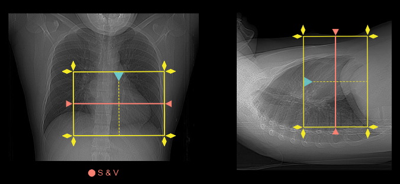
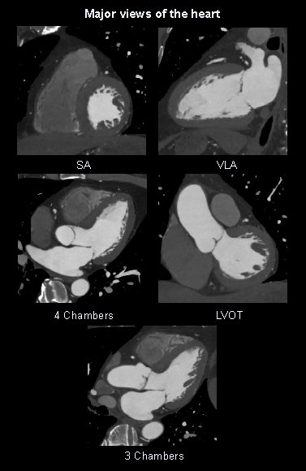
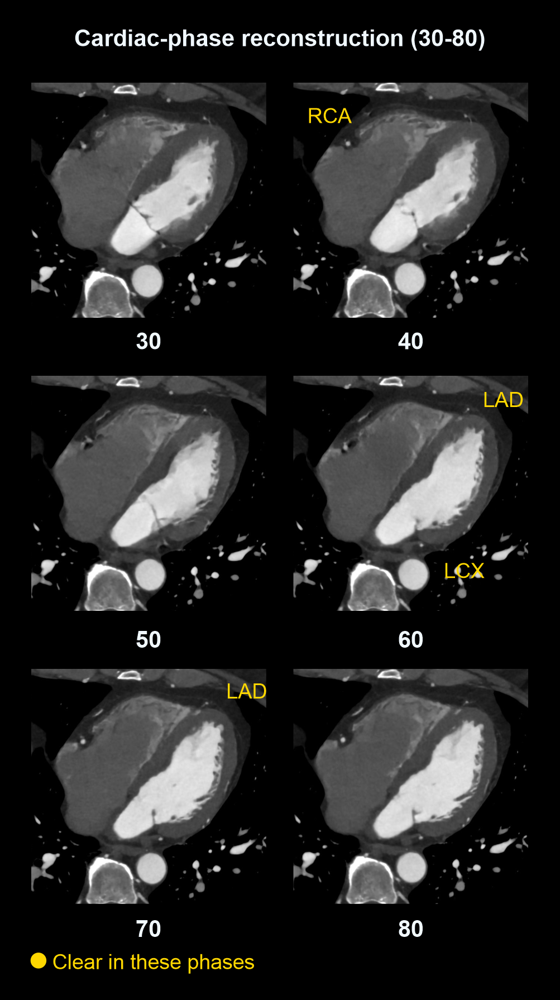
Patient Preparation
- Explain the procedure and breath-holding instructions to the patient.
- Patient should ideally fast for 4–6 hours before the examination.
- Avoid caffeine, tea, coffee, energy drinks, and smoking for at least 12 hours before the scan.
- Check history of contrast allergy, asthma, kidney disease, and previous cardiac procedures.
- Record blood pressure and heart rate before the examination.
- Heart rate should preferably be below 65 bpm for optimal image quality.
- Beta blockers may be administered as advised by the radiologist or physician if heart rate control is required.
- Sublingual nitrate may be given before scanning if not contraindicated.
- Use an 18G cannula in the right antecubital vein whenever possible.
Contrast Protocol
| Parameter | Protocol |
|---|---|
| Contrast | Non-ionic iodinated contrast (Contrast 350) |
| Adult Dose | 1 ml/kg body weight |
| Pediatric Dose | Not routinely performed in pediatric patients unless specifically indicated |
| Injection Rate | 5–6 ml/sec |
| Saline Flush | 40–50 ml normal saline |
Scan Coverage
- From the level of the carina through the inferior aspect of the heart.
- Coverage should include the entire coronary arterial system.
Calcium Score (Optional)
| Phase | Coverage | Slice Thickness |
|---|---|---|
| Non-Contrast Calcium Score | Entire heart | 2.5–3 mm |
Coronary Angiography Acquisition
| Phase | Timing | Slice Thickness | Reconstruction |
|---|---|---|---|
| Coronary Arterial Phase | Bolus tracking triggered | 0.5 mm | 0.5 mm |
Bolus Tracking
| Parameter | Value |
|---|---|
| ROI Placement | Ascending Aorta |
| Threshold | 150 HU |
| Monitoring Delay | 5 seconds |
| Post Trigger Delay | 5–8 seconds |
Reconstruction Protocol
- 0.5 mm axial images.
- Multiplanar reformats (MPR).
- Curved planar reformations (CPR).
- Maximum intensity projection (MIP).
- 3D volume-rendered images.
- Cardiac phase reconstructions as required.
PACS
- 0.5 mm axial dataset.
- MPR, CPR, MIP, and 3D reconstructions.
- Calcium score images when performed.
Technical Notes
- Maintain a stable and low heart rate whenever possible.
- Proper ECG gating is essential for reducing motion artifacts.
- Practice breath-holding with the patient before scan acquisition.
- Monitor the patient throughout contrast injection.
Clinical Indications
- Suspected coronary artery disease.
- Chest pain evaluation.
- Coronary artery anomaly assessment.
- Pre-operative cardiac evaluation.
- Coronary bypass graft assessment.
- Coronary stent follow-up in selected cases.
CT Coronary Angiography for CABG Assessment
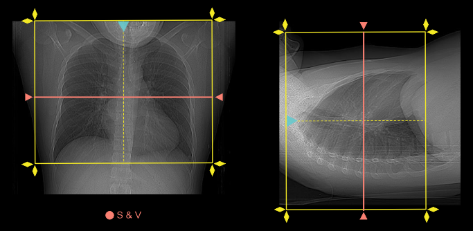
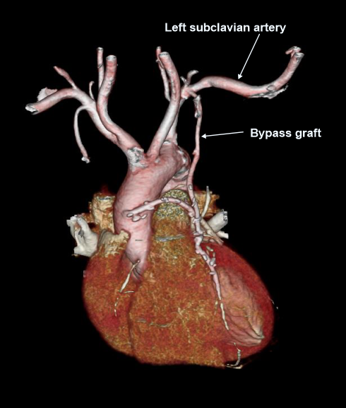
Patient Preparation
- Explain the procedure and breath-hold instructions before scanning.
- Patient should ideally fast for 4–6 hours.
- Avoid caffeine, tea, coffee, and smoking for at least 12 hours before the examination.
- Check renal function and history of contrast allergy.
- Record heart rate and blood pressure before the scan.
- Beta blockers may be administered if required and clinically appropriate.
- Sublingual nitrate may be given if not contraindicated and approved by the radiologist.
- Use an 18G cannula in the right antecubital vein whenever possible.
Contrast Protocol
| Parameter | Protocol |
|---|---|
| Contrast | Contrast 350 |
| Adult Dose | 1 ml/kg body weight |
| Injection Rate | 5–6 ml/sec |
| Saline Flush | 40–50 ml normal saline |
Scan Coverage
- From thoracic inlet to below the heart.
- Coverage must include:
- Ascending aorta
- Aortic arch
- Internal mammary artery grafts
- Saphenous vein grafts
- Native coronary arteries
- Cardiac apex
Acquisition Protocol
| Phase | Timing | Slice Thickness | Reconstruction |
|---|---|---|---|
| Non-Contrast Calcium Score (Optional) | Before contrast | 2.5–3 mm | Standard |
| CABG Arterial Phase | Bolus tracking | 0.5 mm | 0.5 mm |
Bolus Tracking
| Parameter | Value |
|---|---|
| ROI Placement | Ascending Aorta |
| Threshold | 150 HU |
| Monitoring Delay | 5 seconds |
| Post Trigger Delay | 5–8 seconds |
Reconstruction Protocol
- 0.5 mm axial images.
- Multiplanar reformats (MPR).
- Curved planar reformations (CPR).
- MIP images.
- 3D volume-rendered images.
- Dedicated graft evaluation reconstructions.
PACS
- 0.5 mm axial images.
- MPR, CPR, MIP, and 3D reconstructions.
- Complete CABG graft assessment series.
Clinical Indications
- Assessment of CABG graft patency.
- Evaluation of graft stenosis or occlusion.
- Post-CABG chest pain.
- Pre-interventional planning.
- Assessment of native coronary arteries after bypass surgery.
Important Notes
- Scan coverage is larger than routine coronary CTA because grafts may originate from the ascending aorta or internal mammary arteries.
- ECG-gated acquisition is strongly recommended.
- Thin-section reconstruction is essential for accurate graft visualization.
Blood Flow Physiology
Blood flows through veins, heart, lungs, and arteries to supply oxygen and nutrients to the entire body.
1. Venous Return: Cubital Vein to Heart
- Median Cubital Vein
- Basilic Vein or Cephalic Vein
- Axillary Vein
- Subclavian Vein
- Brachiocephalic Vein
- Superior Vena Cava (SVC)
- Right Atrium
2. Blood Flow Through the Heart
Right Side of Heart
- Right Atrium
- Tricuspid Valve
- Right Ventricle
- Pulmonary Valve
- Pulmonary Artery
- Lungs (Gas Exchange)
Left Side of Heart
- Pulmonary Veins
- Left Atrium
- Mitral Valve
- Left Ventricle
- Aortic Valve
3. Aorta and Major Divisions
- Ascending Aorta
- Aortic Arch
- Descending Aorta
- Abdominal Aorta
- Common Iliac Arteries
4. Arteries of the Lower Limb
- External Iliac Artery
- Femoral Artery
- Deep Femoral Artery
- Popliteal Artery
Leg Arteries
- Anterior Tibial Artery → Dorsalis Pedis Artery
- Posterior Tibial Artery → Medial & Lateral Plantar Arteries
- Fibular Artery
5. Arteries of the Brain
From Aortic Arch
- Brachiocephalic Trunk (Right Side)
- Right Common Carotid Artery
- Internal Carotid Artery
- External Carotid Artery
- Left Common Carotid Artery
- Left Subclavian Artery
Vertebral System
- Subclavian Artery
- Vertebral Artery
- Basilar Artery
- Circle of Willis
6. Arteries of the Upper Limb
- Subclavian Artery
- Axillary Artery
- Brachial Artery
- Radial Artery
- Ulnar Artery
Hand Blood Supply
- Superficial Palmar Arch
- Deep Palmar Arch
- Digital Arteries
7. Important Arterial Branches
Axillary Artery Branches
- Superior Thoracic Artery
- Thoracoacromial Artery
- Lateral Thoracic Artery
- Subscapular Artery
- Anterior Circumflex Humeral Artery
- Posterior Circumflex Humeral Artery
Brachial Artery Branches
- Profunda Brachii Artery
- Nutrient Arteries
- Radial Artery
- Ulnar Artery
8. Quick Summary
Upper Limb Flow:
Aorta → Subclavian → Axillary → Brachial → Radial/Ulnar → Hand
Brain Flow:
Aorta → Carotid/Vertebral → Brain
Lower Limb Flow:
Aorta → Iliac → Femoral → Popliteal → Tibial → Foot
9. Blood Flow Charts
Venous Return to Lower Limb Arterial Supply along with contrast flow with time duration time duration may be different due to ejection fraction it is the time at which maximum density achieve
10. Brain Blood Supply Flow Chart if cannula is inserted into cubital vain
11. Upper Limb Arterial Flow Chart
Contrast Reaction
Radiology Emergency Reference Manual
Contact On-Duty Medical Officer Immediately
- Intramuscular (IM) Route: Use 1 mg/mL (1:1,000) concentration. Never inject this concentration directly IV.
- Intravenous (IV) Route: Use 0.1 mg/mL (1:10,000) concentration. Administer extremely slowly into a running IV fluid line.
1. Basic Life Support (BLS) Protocols
AHA High-Quality CPR Quick-Reference Matrix
| Component | Adults & Adolescents | Children (1 Year to Puberty) | Infants (Under 1 Year, Excl. Neonates) |
|---|---|---|---|
| Recognition | Unresponsive, no breathing or only gasping, no pulse felt within 10 seconds. | ||
| Pulse Check Location | Carotid artery | Carotid or Femoral artery | Brachial artery |
| Compression Rate | 100 to 120 compressions per minute | ||
| Compression Depth | At least 2 inches (5 cm) Max: 2.4 inches (6 cm) |
About 2 inches (5 cm) (At least 1/3 of AP depth of chest) |
About 1.5 inches (4 cm) (At least 1/3 of AP depth of chest) |
| Hand / Finger Placement | 2 hands on the lower half of the breastbone (sternum) | 1 or 2 hands on the lower half of the breastbone | 1 Rescuer: 2 fingers in center of chest. 2 Rescuers: 2 thumb-encircling hands. |
| Compression-to-Ventilation Ratio | 1 or 2 Rescuers: 30:2 |
1 Rescuer: 30:2 2 Rescuers: 15:2 |
1 Rescuer: 30:2 2 Rescuers: 15:2 |
| Chest Recoil | Allow full chest recoil after each compression. Do not lean on the chest. | ||
| Rescue Breathing (Pulse present, breathing absent) |
1 breath every 5–6 seconds (10–12 breaths/min) |
1 breath every 2–3 seconds (20–30 breaths/min) |
|
| AED Application | Attach and use AED immediately as soon as it is available. Minimize interruptions in chest compressions before and after shocks. | ||
2. Categories of Acute Contrast Reactions
| Severity | Allergic-Like Symptoms | Physiologic Symptoms |
|---|---|---|
| Mild (Self-limited; no progression) |
|
|
| Moderate (Pronounced; requires medical management) |
|
|
| Severe (Life-threatening; risk of death or permanent injury) |
|
|
3. Treatment of Acute Contrast Reactions in Children
General Initial Measures (Pediatric Severe Respiratory/Cardiovascular Reactions)
- Preserve IV access and closely monitor vital signs.
- Administer Oxygen by mask at 6–10 L/min.
- Call Emergency Response Team / Medical Officer (MO) based on patient status.
Automated Pediatric Dose Calculator
Enter the child's weight to instantly calculate standardized emergency drug metrics.
| Reaction Type & Severity | Management Protocol | Medication Dosing |
|---|---|---|
| Hives (Urticaria) Mild: Scattered/transient Moderate: Numerous/bothersome Severe: Widespread/progressive |
|
Diphenhydramine (Benadryl): 1 mg/kg (Max: 50 mg) PO, IM, or IV (give IV slowly over 1–2 mins). *Note: May cause drowsiness; IV/IM forms can worsen low blood pressure. Alternate Antihistamine Option: Inj. Avil (25 mg / 2 mL). |
| Bronchospasm Mild Moderate Severe |
|
Beta-Agonist Inhaler (Albuterol): 2 puffs (90 mcg/puff, total 180 mcg). Repeat up to 3 times. *Alternate Nebulization: Ventolin Nebulization. Epinephrine IM (Moderate): 0.01 mg/kg of 1:1,000 dilution (0.01 mL/kg). Max: 0.30 mL (0.30 mg). Repeat every 5–15 mins (Max total: 1 mg). Or Auto-injector: <30 kg = EpiPen Jr (0.15 mg); ≥30 kg = adult EpiPen (0.30 mg). Epinephrine IV (Moderate/Severe): 0.01 mg/kg of 1:10,000 dilution (0.1 mL/kg) slowly into running IV. Max single dose: 1.0 mL (0.1 mg). Repeat up to 1 mg total. |
| Laryngeal Edema All Forms |
|
Epinephrine IV (Preferred if perfused): 0.01 mg/kg of 1:10,000 dilution (0.1 mL/kg) slowly into running IV. Max single dose: 1.0 mL (0.1 mg). Epinephrine IM / Auto-Injector: Same pediatric IM dosing as Bronchospasm (above). *Note: IV route preferred over IM in shock states due to poor peripheral perfusion. |
| Hypotension 1. Vasovagal (with Bradycardia) 2. Anaphylactoid (with Tachycardia) |
|
1. For Severe Vasovagal (Bradycardia): Atropine IV: 0.02 mg/kg (0.2 mL/kg of 0.1 mg/mL solution). Min single dose: 0.1 mg. Max single dose: 0.6–1.0 mg. Max total: 1 mg (infants/children); 2 mg (adolescents). 2. For Severe Anaphylactoid (Tachycardia): Epinephrine IV or IM: Use same pediatric doses outlined under Bronchospasm. |
| Unresponsive & Pulseless |
|
Epinephrine IV (between 2-min CPR cycles): 0.01 mg/kg of 1:10,000 dilution (0.1 mL/kg) fast IV push followed by flush. Max single dose: 10 mL (1 mg). |
| Pulmonary Edema |
|
Furosemide (Lasix) IV: 0.5–1.0 mg/kg administered slowly over 2 minutes. Max: 40 mg. |
| Seizures / Convulsions |
|
Emergency team medical management upon arrival. |
| Hypoglycemia |
|
If able to swallow safely: Oral glucose (2 sugar packets, 15g gel, or 1/2 cup fruit juice). If unable to swallow + IV access: Dextrose 25% (D25) IV: 2 mL/kg over 2 mins. If unable to swallow & NO IV access: Glucagon IM/SQ: 0.5 mg (if <20 kg) or 1.0 mg (if >20 kg). |
4. Treatment of Acute Contrast Reactions in Adults
General Initial Measures (Adult Severe Respiratory/Cardiovascular Reactions)
- Preserve IV access, apply pulse oximeter, and monitor vital signs closely.
- Administer Oxygen via mask at 6–10 L/min.
- Call Emergency Response Team / Medical Officer (MO) as clinically indicated.
| Reaction Type & Severity | Management Protocol | Medication Dosing |
|---|---|---|
| Hives (Urticaria) Mild: Scattered/transient Moderate: Numerous/bothersome Severe: Widespread/progressive |
|
Oral options (Mild/Moderate): Diphenhydramine (Benadryl): 25–50 mg PO Fexofenadine (Allegra): 180 mg PO *Alternate Oral Option: Oral Avil. IV/IM options (Moderate/Severe): Diphenhydramine (Benadryl): 25–50 mg IM or slow IV (over 1–2 mins). *Alternate Injectable Option: Inj. Avil (25 mg / 2 mL). |
| Diffuse Erythema 1. Normotensive 2. Hypotensive |
|
IV Fluids: 0.9% Normal Saline or Lactated Ringer's: 1,000 mL rapidly. Epinephrine IV (Profound reaction): 1 mL of 1:10,000 dilution (0.1 mg) slowly into a running IV. Can repeat up to 10 mL (1 mg) total. Epinephrine IM (If no IV access): 0.3 mL of 1:1,000 dilution (0.3 mg) IM or Auto-injector. Can repeat every 5–15 mins (Max 1 mg total). |
| Bronchospasm Mild Moderate Severe |
|
Beta-Agonist Inhaler (Albuterol): 2 puffs (90 mcg/puff, total 180 mcg). Repeat up to 3 times. *Alternate Nebulization: Ventolin Nebulization. Epinephrine IM (Moderate/Severe alternate): 0.3 mL of 1:1,000 dilution (0.3 mg) IM or Auto-injector every 5–15 mins (Max 1 mg). Epinephrine IV (Moderate/Severe preferred): 1 mL of 1:10,000 dilution (0.1 mg) slowly into running IV line. Repeat as needed up to 10 mL (1 mg) total. |
| Laryngeal Edema All Forms |
|
Epinephrine IV (Preferred): 1 mL of 1:10,000 dilution (0.1 mg) slowly into running IV fluid. Repeat up to 10 mL (1 mg) total. Epinephrine IM: 0.3 mL of 1:1,000 dilution (0.3 mg) IM or Auto-injector every 5–15 mins (Max 1 mg). |
| Hypotension (Systolic BP < 90 mm Hg) 1. Vasovagal (Pulse < 60 bpm) 2. Anaphylactoid (Pulse > 100 bpm) |
|
1. For Severe Vasovagal (with Bradycardia): Atropine IV: 0.6–1.0 mg into running IV line. Can repeat up to 3 mg total. 2. For Persistent Anaphylactoid (with Tachycardia): Epinephrine IV: 1 mL of 1:10,000 dilution (0.1 mg) slowly into running IV. Max total: 1 mg. Epinephrine IM: 0.3 mg (1:1,000 dilution) if no IV access. |
| Hypertensive Crisis (Diastolic > 120 mmHg; Systolic > 200 mmHg + organ strain) |
|
Laving-saving Labetalol IV (Preferred): 20 mg IV slowly over 2 mins. Can double dose every 10 mins (e.g., 40 mg, then 80 mg). If Labetalol is Unavailable: Nitroglycerin tablet (SL): 0.4 mg sublingually every 5–10 mins AND Furosemide (Lasix) IV: 20–40 mg slowly over 2 mins. |
| Pulmonary Edema |
|
Furosemide (Lasix) IV: 20–40 mg IV administered slowly over 2 minutes. |
| Seizures / Convulsions |
|
If unremitting: Lorazepam IV: 2–4 mg administered slowly (Maximum total dose: 4 mg). |
| Hypoglycemia |
|
If able to swallow safely: Oral glucose (2 sugar packets, 15g gel, or 1/2 cup fruit juice). If unable to swallow + IV access: Dextrose 50% (D50W) IV: 1 ampule (25 grams) over 2 mins. (Follow with D5W or D5NS at 100 mL/hr). If no IV access: Glucagon IM: 1 mg. |
5. Contrast Media Extravasation Management Checklist
- Stop the Injection Immediately: Do not remove the cannula right away; attempt to gently aspirate remaining contrast from the hub first.
- Remove Cannula & Elevate: Extract the catheter and elevate the affected arm/limb above heart level to decrease local capillary pressure.
- Thermal Applications: Apply cold compresses to compress local blood vessels and minimize localized inflammatory damage. Alternating warm compresses can sometimes be used to speed up absorption of the pool.
- Perfusion / Neurovascular Checks: Regularly examine the site for skin color changes, blistering, temperature changes, capillary refill time, and local paresthesia/numbness.
- Surgical Consultation Criteria: Promptly call Plastic Surgery or Orthopedics if there is evidence of progressive blistering, skin sloughing, severe intensifying pain, or signs of evolving compartment syndrome (altered sensation, absence of distal pulse).
6. Panic Attacks & Reaction Rebound Prevention
Anxiety / Panic Attack (Diagnosis of Exclusion)
- Protocol: Maintain IV access, check vitals, and track oxygenation with a pulse oximeter.
- Management: Carefully assess the patient to rule out evolving physical allergic/physiologic systems. If vitals and oxygenation are completely normal with no physical signs, reassure the patient.
Reaction Rebound Prevention (Corticosteroids)
| Medication (IV) | Adult & Pediatric Rebound Dose Protocol |
|---|---|
| Hydrocortisone (Solu-Cortef®) | 5 mg/kg IV administered slowly over 1–2 minutes. (Adult Max: 200 mg). |
| Methylprednisolone (Solu-Medrol®) | 1 mg/kg IV administered slowly over 1–2 minutes. (Adult Max: 40 mg). |
7. Quick Post-Event Incident Log Template
Fill or copy this layout to capture precise timing details before updating hospital medical records.
CT Physics
The Physics of Computed Tomography (CT)
A Technical Guide to Image Generation, Acquisition Modes, Parameters, and Reconstruction Mathematics
1. X-Ray Production and Tube-Detector Geometry
At the core of the CT system is the gantry, a rapidly rotating ring housing both a high-capacity X-ray tube and an opposing curved array of solid-state detectors.
The X-Ray Tube
To withstand the massive thermal loads generated by continuous, rapid rotation, CT tubes utilize heavy-duty rotating anodes made of tungsten, rhenium, and molybdenum alloys. These tubes operate at high potentials—typically ranging from 80 to 140 kVp—generating a polychromatic spectrum of high-energy photons via Bremsstrahlung (braking) interactions and characteristic X-ray production.
Filtration & Collimation
- Bow-Tie Filters: Positioned at the tube exit port, these filters are thinner in the center and thicker at the periphery. Because human cross-sections are roughly cylindrical, this shape attenuates the outer parts of the beam that pass through less tissue, equalizing photon flux reaching the detector array and reducing unnecessary skin dose.
- Collimation: Pre-patient collimators dictate the active width of the X-ray beam along the longitudinal axis (z-axis), which defines the total coverage area per rotation. Post-patient collimators sit in front of the detectors, intercepting scattered photons to ensure only undeflected, primary transmission data is recorded.
2. Interaction of X-Rays with Matter
As the X-ray beam passes through a patient, its initial intensity is reduced through absorption and scattering. This attenuation is mathematically expressed via the Beer-Lambert Law for monochromatic beams:
Where I0 is the initial intensity, I is the transmitted intensity hitting the detector, x is the tissue thickness, and u is the tissue's specific linear attenuation coefficient (1/cm).
Primary Interaction Mechanisms
- Compton Scattering: The dominant interaction in CT soft tissue imaging within the 80 to 140 kVp range. An incoming X-ray photon collides with a loosely bound outer-shell electron, ejecting it and deflecting the photon with reduced energy. This interaction depends almost entirely on the physical electron density of the tissue substrate rather than its atomic number.
- Photoelectric Effect: An incoming photon is completely absorbed by an inner-shell electron, which is then ejected. The probability of this interaction is highly sensitive to the effective atomic number cubed (Z to the power of 3). While less frequent in soft tissues at high energies, it spikes dramatically when high-Z contrast media like Iodine (Z = 53) or Barium (Z = 56) are introduced, providing high contrast enhancement.
3. Data Acquisition and Raw Data Space (Sinograms)
Because the generated X-ray beam is polychromatic, lower-energy photons are absorbed preferentially as the beam moves through the patient. This shifts the mean energy of the remaining beam higher—a physical phenomenon known as beam hardening.
The transmission signal registered by a single detector element along a straight path is called a ray. A complete collection of parallel rays captured from a single tube angle forms a projection. As the gantry executes its full rotation, thousands of projections are recorded at incremental angles.
This raw, unprocessed data is captured in a coordinate matrix known as Radon Space and visualized as a sinogram. In a sinogram, the horizontal axis matches the individual channels across the detector array, while the vertical axis maps the gantry's rotational angle. A single point inside the patient traces a distinctive, smooth sine wave across this raw data display.
4. Image Reconstruction Mathematics
To convert raw sinograms into a viewable slice, the spatial distribution of the linear attenuation coefficients (u) must be solved across a grid.
Filtered Back-Projection (FBP)
Historically the standard algorithm, back-projection reverses the acquisition process by smearing projection data back across a blank digital matrix. Simple back-projection results in a classic 1/r blurring artifact around structures. To cancel this out, a mathematical filter or reconstruction kernel is applied to the data before projection:
- Sharp Kernels (High-Pass Filters): Enhance structural borders and spatial resolution (ideal for bone details), but amplify quantum noise.
- Smooth Kernels (Low-Pass Filters): Suppress noise and smooth out pixels, optimizing low-contrast differentiation needed for soft tissues.
Iterative Reconstruction (IR)
Modern scanners employ iterative feedback loops to reconstruct images. The computer generates an initial image estimate, performs a simulated forward projection to calculate an artificial sinogram, and compares it directly against the true raw data sinogram. The differences are evaluated, and the image matrix is updated iteratively until the simulated data matches the real data within a set tolerance threshold. Advanced versions model the exact physical behavior of the focal spot, detector geometry, and photon statistics, which drastically reduces noise and lowers required radiation doses.
5. Hounsfield Units and the CT Number
The reconstructed image is organized into a matrix of pixels, where each pixel corresponds to a volumetric block of tissue known as a voxel. The attenuation properties within each voxel are normalized against the attenuation of water and expressed as a CT Number in Hounsfield Units (HU):
Standardized Hounsfield Values
- Air: -1000 HU
- Fat: -50 to -100 HU
- Water: 0 HU
- Soft Tissue (Muscle, Liver, Brain): +30 to +80 HU
- Cortical Bone: +1000 to +3000 HU
6. Scanning Modes
The mechanical coordination between the rotating gantry and the moving patient table dictates how raw data space is populated.
Axial Mode (Step-and-Shoot / Sequential)
The table remains completely stationary during data acquisition. The tube rotates 360 degrees to capture a single slice or block of slices, the beam shuts off, the table moves to the next position along the z-axis, and the process repeats. This ensures a pristine, perpendicular Slice Sensitivity Profile (SSP) without geometric skewing, but is slow and prone to breathing-related misregistration artifacts.
Helical Mode (Spiral)
The tube rotates continuously inside the gantry while the table moves through the scan field at a constant velocity. This creates a continuous helical acquisition path around the patient. Because the data is skewed along a slant, the system applies helical interpolation mathematics (such as 180LI or 360LI algorithms) to calculate a flat 2D plane. This interpolation causes a slight broadening or blurring at the slice boundaries.
Cine Mode (Dynamic)
The table remains stationary while the X-ray tube rotates continuously over a fixed anatomical position for a prolonged duration. This tracks changes in Hounsfield Units over time, capturing temporal resolution (4D CT). It is essential for mapping blood flow kinetics but delivers a high, localized radiation dose.
Cardiac Gating Modes
- Prospective ECG Gating: An axial "step-and-shoot" method where the system tracks the patient's ECG and flashes the beam on exclusively during the resting phase of mid-to-late diastole. This delivers a low radiation dose.
- Retrospective ECG Gating: A helical method where the beam remains active continuously throughout the entire cardiac cycle at an ultra-low pitch. The software subsequently matches the raw data to the ECG timeline to reconstruct motion-free cardiac images, providing functional movies at the cost of higher radiation exposure.
7. Operator-Selectable and System-Calculated Parameters
The quality, noise profile, and radiation footprint of a CT study are regulated by a network of interacting parameters.
X-Ray Beam Quality & Quantity
- Tube Potential (kVp): Regulates the peak voltage across the tube, determining the maximum kinetic energy of electrons and the overall penetrability of the photon spectrum. High kVp values penetrate thick anatomy, while low kVp values boost contrast visibility by aligning the beam spectrum with the K-edge of Iodine (33.2 keV).
- Tube Current (mA): Controls the temperature of the cathode filament, dictating the total quantity of photons produced per second. Image noise is inversely proportional to the square root of the tube current (Noise proportional to 1 / sqrt(mA)).
- Exposure Time (t) & mAs: The active duration of the beam per rotation. Total exposure is quantified as mAs = mA * t. Helical scans utilize Effective mAs (Effective mAs = mAs / Pitch).
Geometric & Volumetric Parameters
- Scan Pitch: The ratio of table movement per rotation to the total collimated beam width along the z-axis:
Pitch = Table Feed per Rotation (mm) / Total Collimated Beam Width (mm)A pitch of 1.0 means helical paths lie perfectly adjacent. A pitch less than 1.0 creates overlapping datasets (lower noise, higher dose), while a pitch greater than 1.0 introduces data gaps that require more interpolation (faster scan, lower dose).
- Detector Configuration (N x T): Defines how physical rows are configured along the z-axis, where N is the number of data channels and T is the nominal width of an individual detector element. Their product (N x T) yields the total beam collimation width.
- Fields of View (FOV): The Scan FOV (SFOV) represents the maximum circular area calibrated for data collection within the gantry opening. The Reconstruction FOV (RFOV) is the target area chosen by the operator to fill the display pixel matrix.
8. Image Performance Components
Image optimization requires managing the trade-offs between resolving fine geometric structures and detecting subtle soft tissue variances.
Spatial Resolution
The ability to resolve small, separate objects that are close together, measured in line pairs per centimeter (lp/cm).
- In-Plane (XY-Axis): Enhanced by smaller X-ray tube focal spots, smaller physical detector elements, larger reconstruction matrices, and smaller reconstruction fields of view (RFOV).
- Longitudinal (Z-Axis): Controlled by narrow detector collimations (T), lower spiral pitches, and optimized interpolation algorithms that prevent widening of the slice profile.
Contrast Resolution
The ability to differentiate tissues with very similar linear attenuation coefficients (low-contrast structures). This is limited primarily by **quantum noise** (statistical photon mottle).
- Optimization Factors: Contrast-to-Noise Ratio (CNR) is improved by increasing total photon flux (mAs), utilizing thicker reconstructed slices to pool photon numbers, or shifting to a smooth reconstruction kernel.
Display Parameters (Windowing)
Because the human eye can distinguish only 30 to 60 shades of gray, the wide Hounsfield scale must be mapped into viewable grayscale levels via display settings:
- Window Width (WW): The total range of HU values distributed across the monitor's grayscale. Wide windows (WW = 1000 to 2000 HU) prevent saturation in areas with massive density shifts like bone or lung. Narrow windows (WW = 40 to 100 HU) expand tiny density variations into visible changes in contrast for uniform areas like brain soft tissue.
- Window Level (WL): The exact midpoint HU value around which the window width is centered. It is matched to the average attenuation density of the target organ (e.g., Abdomen WL = +40 HU, Lung WL = -500 HU).
9. Artifact Physics and Mitigation Strategies
An artifact is a systemic discrepancy between the CT numbers in a reconstructed image and the true linear attenuation coefficients of the scanned object.
| Artifact | Physical Root Cause | Visual Manifestation | Mitigation Strategy |
|---|---|---|---|
| Beam Hardening | Preferential absorption of low-energy photons as a polychromatic beam crosses dense material, artificially lowering computed attenuation directly behind the object. | Dark broad bands or cupping streaks between dense bony boundaries or implants. | Iterative reconstruction models, hardware filtration, or integrated beam-hardening correction software. |
| Partial Volume Averaging | Occurs when a single voxel encompasses multiple distinct tissue densities (e.g., thick cortical bone abutting brain tissue). The scanner averages their attenuation into a single gray value. | Blurring at structural borders or artificial shading halos around dense tissue edges. | Utilizing narrower individual detector configurations to reconstruct thinner slices. |
| Metal Artifacts | An extreme form of beam hardening, scatter, and complete photon starvation caused by metallic objects blocking the entire X-ray beam. | Severe starburst patterns of alternating black and white streaks radiating from the metal. | Metal Artifact Reduction (MAR) software algorithms, adjusting gantry tilt, or raising tube potential (kVp). |
| Ring Artifacts | Hardware miscalibration or hardware failure affecting an individual detector element within a rotating detector assembly. | Concentric rings centered precisely around the rotational axis of the gantry. | Performing detector air-calibrations or replacing the faulty detector element module. |
| Motion Artifacts | Physical patient movement (voluntary breathing or involuntary cardiac action) during raw data acquisition, which misaligns projection coordinates in the sinogram. | Double boundaries, ghosting artifacts, or structural blurring. | Faster gantry rotation speeds, utilizing prospective/retrospective gating, or clear breath-hold instructions. |
10. Radiation Dosimetry Metrics
Quantifying and managing the ionizing radiation dose delivered during an examination is governed by three standardized metrics calculated from physical phantom models:
- CTDIvol (Volume CT Dose Index): Measured in milliGrays (mGy), this represents the average radiation dose delivered to a standardized cross-sectional slice within the scanned volume. It accounts for the helical pitch:
CTDIvol = CTDIw / Pitch
- DLP (Dose-Length Product): Measured in milliGray-centimeters (mGy*cm), this quantifies the total radiation output across the entire longitudinal length of the scan sequence:
DLP = CTDIvol * Scan Length (in cm)
- Effective Dose (E): Measured in milliSieverts (mSv), this estimates long-term stochastic biological risk. It is derived by multiplying the total DLP by a region-specific tissue weighting factor (k-factor) that accounts for the radiosensitivity of the scanned body parts:
E = DLP * k
11. Advanced Detection Mechanisms and Sampling Physics
Beyond traditional solid-state arrays, modern CT scanner architectures utilize advanced hardware physics to break through traditional limits of spatial resolution, dose efficiency, and geometric alignment.
Photon-Counting Detector (PCD) Physics
Conventional MDCT scanners use energy-integrating detectors (EIDs). In an EID, an incoming X-ray photon strikes a scintillator crystal, converting the X-ray energy into visible light, which a photodiode then converts into an electrical signal. This process suffers from two physical limitations: the signal is weighted by the energy of the photons (low-energy contrast photons are under-represented), and electronic noise is integrated directly into the measurement.
Photon-Counting Detectors (PCDs) replace the scintillator with a direct-conversion semiconductor material (such as Cadmium Telluride [CdTe] or Cadmium Zinc Telluride [CZT]). When an X-ray photon interacts with the semiconductor, it instantly creates electron-hole pairs. An applied high-voltage field pulls these charges to pixelated anodes, generating an electrical pulse.
- Energy Thresholding: The pulse height is directly proportional to the energy of the individual incoming photon. The system uses electronic comparators to sort pulses into specific energy bins, completely eliminating electronic background noise that falls below the lowest energy threshold.
- Intrinsic Spectral Data: Every scan acquired with a PCD is inherently multi-energy (spectral), eliminating the need for specialized dual-source or fast kVp-switching hardware geometries.
- Ultra-High Spatial Resolution: Because scintillators require physical reflective boundaries to prevent light crosstalk (which limits how small an individual detector element can be), removing the scintillator allows PCD pixels to be manufactured at a fraction of the size, drastically increasing in-plane spatial resolution.
Focal Spot Tracking and Z-Focal Spot Modulation
During a high-speed helical scan, mechanical forces and thermal expansion can cause the X-ray tube's focal spot to shift slightly on the tungsten anode track. Left uncorrected, a physical shift of even a fraction of a millimeter misaligns the projection data relative to the detector channels, generating severe shading or blur artifacts along the boundaries of high-contrast structures.
Modern gantries utilize active Focal Spot Tracking systems. Magnetic deflection coils positioned within the X-ray tube dynamically steer the electron beam hitting the anode. By real-time monitoring of the beam's exit position, the system continuously adjusts the electron path to lock the focal spot in a precise geometric position.
Furthermore, systems employ Z-Focal Spot Modulation (Z-Flying Focal Spot). The magnetic coils deliberately deflect the electron beam rapidly between two distinct spots on the anode along the z-axis during a single projection period. This effectively doubles the number of sampling coordinates intersecting the patient volume:
This rapid interleaving of data profiles oversamples the longitudinal plane, significantly reducing aliasing artifacts and sharpening z-axis spatial resolution without requiring smaller physical detector modules.
Quarter-Detector Offset Geometry
In third-generation CT scanners, where the tube and detector array rotate in rigid synchrony, an in-plane spatial sampling limitation arises if the structural grid is perfectly symmetrical. If a ray passing from the tube to a detector element during a 0 degree projection samples the exact same structural pathway as a ray passing in reverse during a 180 degree projection, the system wastes half its potential spatial sampling data.
To break this sampling barrier, manufacturers offset the center of the detector array slightly along the lateral channel axis by exactly one-quarter of a detector element width relative to the true mechanical center of gantry rotation. This is known as Quarter-Detector Offset Geometry.
As the gantry rotates 360 degrees, the rays captured from opposing angles (interleaved projections) are offset by exactly half a detector width from each other. This physical shift doubles the number of data samples across the transaxial reconstruction matrix, maximizing in-plane spatial resolution (lp/cm) and neutralizing aliasing or Moire pattern artifacts.
12. Gantry Electromechanics and Slip-Ring Physics
Early generation scanners were mechanically restricted by heavy high-voltage cables tethered to the generator, requiring the gantry to stop and reverse directions after every 360 degree rotation to unwind the cables.
Modern continuous helical scanning is enabled by Slip-Ring Technology. Slip-rings consist of stationary circular conductive tracks lining the interior circumference of the gantry frame. Conductive carbon-alloy brushes mounted on the rotating rotor maintain continuous sliding electrical contact as the gantry spins. Low-voltage AC power is transferred across these rings to an on-board high-voltage generator that rotates alongside the tube, stepping up the power to the target 80 to 140 kVp locally.
Because physical brushes cannot reliably transmit gigabits of raw projection data per second without electrical interference, modern detector arrays transmit raw data across the rotating gap using contactless Optical Data Link Arrays (high-speed laser or infrared communication systems).
13. K-Edge Imaging and Contrast Physics
The physics of contrast enhancement relies on manipulating the relationship between the X-ray photon energy spectrum and the binding energy of a material's inner electron shells. When an incoming photon's energy sits precisely at or just slightly above the binding energy of an atom's K-shell electron, the probability of a photoelectric interaction spikes exponentially. This sudden jump in attenuation is called the K-edge.
- Iodine (Z = 53): Features a K-edge energy of 33.2 keV.
- Barium (Z = 56): Features a K-edge energy of 37.4 keV.
While a standard 120 kVp polychromatic beam produces a mean photon energy of roughly 50 to 60 keV, lowering the tube potential to 80 kVp shifts the average energy profile much closer to these K-edge thresholds. This physics configuration maximizes photoelectric interactions with contrast molecules, dramatically amplifying the Contrast-to-Noise Ratio (CNR) of the vascular system.
14. Interactive CT Parameter Calculators
Use these interactive calculators to analyze the mathematical relationships between gantry mechanics, beam geometry, and radiation exposure metrics.